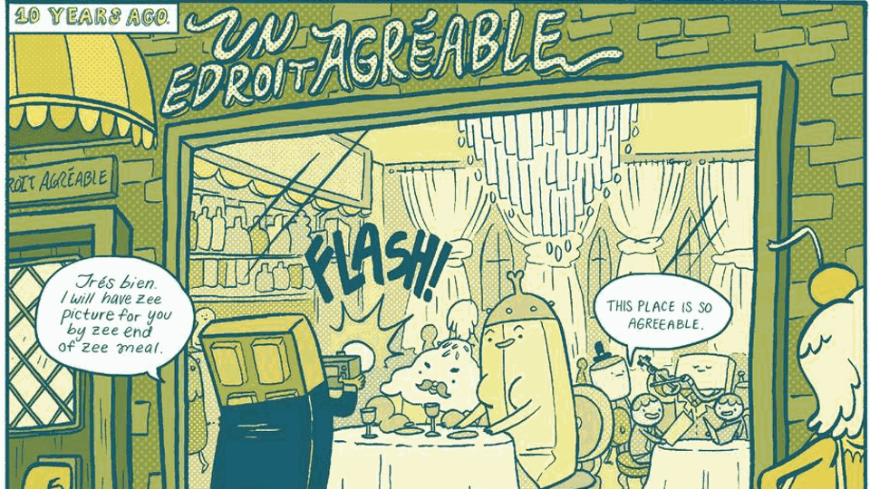

Click here for the Korean translation by SpiderCider and Décadent, up to date as of January 2018.

First things first, this post is really long. If you don't want to read it all right now, I recommend bookmarking it or using Reddit's save feature so you can come back to it later. This was originally going to be a Reddit text post, but it quickly exceeded the forty thousand character limit and now stands at nearly four times that amount, which is why I've moved it to a separate site. This also means I can continue to update the timeline even after the Reddit thread gets automatically locked.
Secondly, this timeline contains all the spoilers. Please don't read it unless you're caught up on the show and you've read all the comics you intend to read. I also recommend you read The Enchiridion and Marcy's Super Secret Scrapbook, since a lot of the timeline draws from that.
I am from the UK, so one must pardon any British spelling or grammar.
Enjoy!

This post was inspired by several Adventure Time timelines published before it. The main reason I started this project was because the timeline by RedLionKing has become outdated and only deals with the core storyline, although my version isn't anywhere near as beautifully written so I recommend you check it out anyway. Also credit to this concise timeline by Viernes_de_Siluetas, from whom I stole the date system.
Thanks to Uncivilized Elk for his in-depth episode analysis videos which have inspired some details of the timeline, and thanks to all the editors and transcribers on the Adventure Time Wiki without whom this task would have been a lot more arduous.
Lots of credit to SpiderCider and Décadent for painstakingly translating this entire piece into Korean for our friends in the east. If anyone is interested in providing translations for any other languages, drop me a PM.
And of course, thanks to Pendleton Ward and the entire Adventure Time crew for creating one of the most deep, complex, and inspiring worlds in the history of children's television.
So you'll know what's new since last time you visited. See the Github commit record for a more detailed changelog.
Spot a spelling mistake? Want to add a missing bit of lore? Send a Reddit PM to /u/Jagm_11 with your suggestions and criticisms. I also accept compliments!
Alternatively, this site is hosted through Github at https://github.com/J4gm/J4gm.github.io, which means you can submit issues and request changes. If I approve a change, it will immediately go live on the site.

This timeline is designed to be as complete as possible. This means that not only am I drawing events from the show, but also from all officially licensed material.
In general, Adventure Time content can be organised into one of three different categories of canonicity:
Top tier: Episodes and shorts created by the show's crew, plus some of the guest-animated episodes.
Middle tier: Licensed material created by members of the show's cast and crew (the Islands prequel, the 2015 Spoooktacular, etcetera), as well as the Word of God (Spring answers, social media posts, etcetera).
Bottom tier: Licensed material created by people not associated with the production of the show. This includes most of the comics, graphic novels, and video games.
Click here for a list of every single piece of media which has been considered for the timeline.
People generally don't consider the main comic series canon due to the lack of subtlety in its plot and the fact that it is often incompatible with the show. The "official" stance on the canonicity of the comics is blurred. Ryan North, the original writer of the main comic series, has claimed that they are pretty much canon, but Adam Muto, executive producer of the show, has suggested otherwise. I'm going to treat the comics like an alternate timeline, which leaves me free to selectively choose which elements I include in the main timeline. I will leave out anything that contradicts the show's continuity, but if an element fits then I see no reason to omit it. At the end of the main timeline I will show some "alternate timelines" such as Farmworld and the various timelines caused by time travel in the comics.
Whenever I make a statement or pull a quote from somewhere, I will show the source in square brackets [like this]. That way, you can make up your own mind whether or not you choose to believe a certain element is canon.
I am using the official season arrangement for labelling episodes, which is the arrangement composed of ten seasons used by Cartoon Network and Wikipedia but not the one used by the fan wiki and the Adventure Time crew. For example, Elemental is S08E08 rather than S07E34. This doesn't affect the order of individual episodes in any way, so it doesn't really matter.

All dates are organised around a year zero, which is the year of the detonation of the Mushroom Bomb and the impact of the Blue Catalyst Comet. BMB stands for Before Mushroom Bomb and AMB stands for After Mushroom Bomb. The letter c before a date stands for circa, and indicates that this is an estimated date. The letter X is used to denote any digit (e.g. 99X could be any year from 990 to 999). A corresponding real-life date is displayed in brackets. Since the beginnings and ends of years are not clear, many events may be one year off. Where applicable, the New Year is assumed to be Finn's birthday.
The real-life date of the war can be narrowed down by the following:
For labelling things with a real-life date, I have assumed that 0 AMB = 2010 CE.
The Mushroom Bomb and the Blue Catalyst Comet hit at approximately the same time. Uniting these two pivotal events makes it much easier to put a date to things, so I have assumed that they both take place in 0 AMB.
It can be inferred that the Land of Ooo is an isolated chunk of the western United States, including Los Angeles and San Francisco. The following evidence supports this (credit to /u/BabyEatingFox for some of these points):
Signs for Interstate Route 101, the main road passing up the coast of California, are seen in I Remember You:

Several shots from the episode Simon and Marcy resemble locations in Los Angeles, such as the Vincent Thomas Bridge (left) and the LA River (right):

In Joshua and Margaret Investigations, the investigation bureau appears to be in the ruins of San Francisco. The bridge in the background of the right image closely resembles the Golden Gate Bridge:

In Bonnibel Bubblegum, there is an Arizona license plate on the wall. Arizona borders California:

The show was written in California, so it makes sense that the writers would use their actual location as a base.
There are a few details that contradict this conclusion. For example, the Statue of Liberty is seen buried in the desert in Angel Face.

The Beginning of the Multiverse

Before there was time - before there was anything - there was nothing. And before there was nothing, there were monsters.
- The Lich [S06E26 Gold Stars]
Reality exists as an infinite chaotic sea of monsters, including beings like Orgalorg, GOLB, and possibly the Lich. By incomprehensible chance, the monsters eventually come to a common agreement on the state of reality, and this consensus becomes the Multiverse. Therefore, despite its appearance to those who inhabit it, the Multiverse is not actually material. The Multiverse is an emergent product of consciousness rather than consciousness being an emergent product of the Multiverse. Every sentient being that lives in the Multiverse paradoxically maintains its existence by experiencing it, and this also means that every sentient being has an existence beyond the material, known as their soul.
Third Orb does not exist, said the Sage.
Why? asked the Student.
Because the Multiverse, said the Sage, within which Third Orb exists, does not exist. The Multiverse is a Consensus Reality shared by the Minds of all Sentient Beings. If they were to Die, the Multiverse, as such, would suddenly blink out of existence, vanish, be no more.
Why? asked the Student.
Because, said the Sage, there would be no one to Perceive It.
- Chapter One of the Wizards' Enchiridion [The Enchiridion and Marcy's Super Secret Scrapbook]
Other than this, the origins of the Multiverse are largely unknown. Nobody knows where the monsters came from or what the true nature of reality is. Everything we know about the world before existence comes from that single glimpse granted by the Lich.
Where did the Multiverse come from? Since logic dictates that asking this question must result in an infinite regression — What created the Multiverse? And what created the Thing that created the Multiverse? And what created the Thing that created the Thing that created the Multiverse? Etcetera — this suggests that the mental engine of logical thinking is not designed to determine the Answer.
- Chapter One of the Wizards' Enchiridion [The Enchiridion and Marcy's Super Secret Scrapbook]
The Structure of Existence

The Multiverse imagined by the primordial monsters is composed of a vast (perhaps infinite) number of "dimensions" which each hold a universe. One of these is the Earth Dimension, sometimes referred to as Third Orb, which contains the planet Earth as well as all the other planets, stars, and galaxies in our own universe. Other dimensions include the Astral Plane, the Crystal Dimension, Lumpy Space, the Nightosphere, and many more. Amidst this complex system of dimensions is the Time Room:
At the centre of the Multiverse is a dimension called the Time Room, believed to be the quasi-corporeal dwelling place of the almighty Prismo. The Time Room is the single dimension that exists outside of time. The Time Room produces time waves that are experienced by other dimensions. Some dimensions have permanent links that allow travel to and from. Others become linked temporarily by naturally forming wormholes. And others can become linked artificially by magical portals, torn open by items of great power. An activated portal creates a time dilation in which either end of the portal experiences a temporal synchronisation allowing for the safe passage of particles through a non-local region of space-time.
- Booko [S04E26 The Lich]
The physics behind the concept of the Multiverse is somewhat explained in chapter four of the Wizards' Enchiridion, albeit in a very hand-wavy pseudo-scientific way. To prevent all of the dimensions from catastrophically colliding with one another, all particles in a specific dimension have their own unique "frequency". Particles with different frequencies reside in different dimensions. Adjusting this frequency allows for interdimensional travel. Another property of each dimension is its "elasticity", which determines how easy it is to change the frequency of particles within that dimension. As stated above by Booko, dimensions can be interlinked if the frequencies of the particles in a local region of both dimensions can be somehow synchronised, hence forming a kind of gateway called a "portal". This is easier in more elastic dimensions. [The Enchiridion and Marcy's Super Secret Scrapbook]
A very rudimentary form of temporal synchronisation is demonstrated by Finn when he interacts with the little people, who reside in "a different dimensional plane" according to Jake. Finn shakes the little people, which synchronises their frequencies enough to allow for brief interdimensional communication. [S05E05 All the Little People]
The elasticity of a dimension has other effects besides ease of interdimensional travel. For example, highly elastic dimensions are more easily influenced by magic (more on that in a couple of sections), and are more likely to allow for interspecies hybrids to be born. The most extreme known example of a hybrid so far seen in the show is Jake's granddaughter Bronwyn, who is half bear, a quarter rainicorn, an eighth dog, and an eighth shape-shifter. [S06E12 Ocarina]
The elasticity of a dimension can vary with time. Earth was elastic in the time of the dinosaurs, then became very rigid during modern times, then elastic once again following the detonation of the Mushroom Bomb. [S06E24 Evergreen, S08E08 Elemental]
One final principle of the Multiverse is the concept of "Amok Time", which states that causality can sometimes be reversed. This allows for accurate predictions of the future and the occasional bit of time travel. [The Enchiridion and Marcy's Super Secret Scrapbook]
The Cosmic Entities

Prismo, who was briefly mentioned earlier, is one of the many "Cosmic Entities" who inhabit the Multiverse. Cosmic Entities are basically immortal gods, and most of them have a specific purpose within the elaborate clockwork of existence:
It can sometimes be unclear who is and is not a Cosmic Entity. In addition to those above, the fan wiki also lists Grob Gob Glob Grod, Party God, Cuber, Life, the Elementals, Finn, Martin, and the Lich as Cosmic Entities (more on most of these individuals later). [Wiki: Category:Deities and Cosmic Entities]
The Concept of Death

Adventure Time has done a surprising amount of exploration around what might happen after you die. There appear to be four main possibilities:
It is implied that ending up in a higher Dead World is a more desirable outcome. The highest ever mentioned in the show is the Fiftieth, which appears to be the equivalent of Heaven and is probably synonymous with "Glob World". [S03E24 Ghost Princess, S05E21 The Suitor, S03E18 The New Frontier]
According to Jake, lower Dead Worlds are the worlds containing ghosts, which overlap with the material world. [S06E17 Ghost Fly]
The Concept of Magic

Since the Multiverse is maintained by the perceptions of the sentient beings within it, the imagination can actually be used to change the very structure of existence. This practice is most commonly known as "magic" and used almost exclusively by witches and wizards, although others can also learn to manipulate the material world using their mind.
However insecure a wizard might be, wizardry is the realm of the Imagination, and even the flabbiest, most flop-sweaty wizard can warp your perceptions enough to make you believe they are fully capable of kicking your butt.
- Chapter Two of the Wizards' Enchiridion [The Enchiridion and Marcy's Super Secret Scrapbook]
Magic most commonly manifests itself in the form of spell-casting, in which magic users recite incantations and channel their imagination through magically charged items in order to produce various effects. They usually have to practice one trick over and over until they are able to consistently perform it, which is why most magic users have a unique but limited arsenal of spells. There are other methods of performing magic as well. For example, Finn has performed magic via meditation and song, and Son of Rap Bear can produce explosions by rapping. [The Enchiridion and Marcy's Super Secret Scrapbook, S03E07 Still, S06E43 The Comet, S10E03 Son of Rap Bear]
According to Betty Grof's MMS theory, all magic users have varying levels of magic, madness, and sadness. These three properties are required in order to reliably perform magic. [S06E38 You Forgot Your Floaties]
There are two perspectives on the concept of magic. Scientists like Princess Bubblegum believe that it happens due to observational quantum effects and is grounded in scientific principles. On the other hand, magicians choose not to question the methods by which magic is possible, and, thanks to this blind belief, they are far more proficient at performing it. Neither view is incorrect. [S05E26 Wizards Only, Fools]
The Infinite Enchiridion

The Enchiridion is an ancient tome and one of the most powerful magical artifacts in the Multiverse. Its exact origin is unknown: in fact, due to its paradoxical nature it might not even have a true origin. Over the course of all of history, it is written and enchanted by thousands of wizards. These spells cause it to gain sentience, change with every reading, and contain knowledge from the past and future. The original tome is over eight million pages long. Various abridged copies are eventually produced, all of which retain its magical properties. The tome is split into two books: one for heroes and one for wizards. [The Enchiridion and Marcy's Super Secret Scrapbook]
Placing gems into various slots in the Enchiridion can produce powerful magic spells. Most notably, filling the gem slots in the front cover enables the user to open a portal to any dimension in the Multiverse, and might even allow for time travel. [S04E26 The Lich, S09E09 Skyhooks II]
The Formation of the Solar System

The planets Earth and Mars form in the Earth Dimension around a sentient star called the Sun. [S06E10 Something Big]
On Planet Earth exists the concept of five fundamental elements: Fire, Ice, Candy, Slime and Lumps: parodying the real-life (but false) classical elements of fire, water, earth, air and aether. These will become important later on. [S08E08 Elemental, S09E09 Skyhooks II]
A demon named Hunson Abadeer comes into being around this time:
My single earliest memory occurred eons before the Mushroom War. This memory consists of one image: me eating a ham sandwich, perched atop Rock Candy Mountain, overlooking the Sea of Something, long before Plants, Animals, and Actual Things came into existence in the Land of Ooo, surrounded by an all-encompassing Night of Nothingness. Full disclosure: I believe I was a ghost at the time, although it isn't clear how a ghost can sit on a mountain peak or eat a ham sandwich.
- Hunson Abadeer, in the Encyclopaedia [The Adventure Time Encyclopaedia]
Continuity error: This excerpt suggests that the Land of Ooo has existed since the beginning of life on Earth, but this is now known to be false since it did not form until after the Great Mushroom War.
It is not known if Hunson Abadeer was once a living being, or if his soul simply came into existence out of nothing. Once he manifests a physical demon body, he and most other demons end up living in a hellish dimension called the Nightosphere. [S04E05 Return to the Nightosphere]
Other Worlds

Aside from Earth, a multitude of other planets in and around the Solar System are also inhabitable. Eventually, interplanetary travel becomes widespread enough that many of them are able to communicate with one another, forming the backbone of an interstellar community. As far as we know, Earth never makes contact with its neighbours. [S06E41 On The Lam]
Currently, these are the other worlds within the Earth Dimension where life is known to exist:
The technological level of most interplanetary civilisations is unknown. Some creatures, such as the giant moth, appear to be capable of faster-than-light travel, given the fact that Martin travels from the planet of the koala people back to Planet Earth in a very short time. [S06E43 The Comet]
The Cosmic Elementals [COMICS ONLY]

Four Cosmic Entities each rule over one of the four elements:
Zon, Arklothac, and Ng'zot Aa reap the Earth for many years, terrorising the fledgling life that has begun to appear. Lun takes pity on the inhabitants of Earth and decides to take action against the other Elementals. She betrays them and has them locked outside the Earth dimension so that they can do no further harm. [Adventure Time Issue 59]
To prevent the evil Elementals from ever returning, Lun sacrifices herself to create the Sword of Lun, a weapon capable of destroying them should they ever return. Before being used, the sword must await its true bearer, "a warrior who can withstand great bodily loss without injury". [Adventure Time Issue 61]
The Ice Elemental's betrayal would go on to repeat itself several times through history. [S06E24 Evergreen, S08E08 Elemental]
The Earthly Elementals

Ever since life began on this planet, there have always been embodiments of the four elements: Fire, Ice, Candy, and Slime. Across eons and millennia the four Elementals lived, and died, and lived again.
- Patience St Pim [S08E08 Elemental]
The Elementals are powerful wizards who live on Earth and each represent one of the aforementioned elements. They possess the power to generate and shape their own element in a variety of ways. Whenever an Elemental dies, their soul is reincarnated into a new body, meaning that there is almost always a living representative for each element at any one time. [S06E24 Evergreen]
The fifth element, Lumps, behaves as an "anti-element", and also has an associated Elemental to go with it. The Lumps Elemental is capable of undoing the magic of the other four. Furthermore, Lumps apparently permeates through the universe, similar to aether, its classical counterpart. A Lumpy Space person is seen on the planet of the koala people, suggesting that Lumpy Space is accessible from anywhere in the universe. [S09E09 Skyhooks II, S06E41 On The Lam]
Lumps are the subspace molecular lattice that binds together the scientific and magical forces of Ooo. More powerful than any one element, it's the force that orders reality into its true shape.
- Lumpy Space Queen [S09E09 Skyhooks II]
Like all magic users, the power of the Elementals is entirely dependent on the elasticity of the Earth dimension. For example, Evergreen, who lived millions of years in the past, is capable of constructing an entire castle from ice, whereas the fire elemental of the pre-war era struggles to heat a single cup of coffee. [S06E24 Evergreen, S08E08 Elemental]
The Catalyst Comet

At around the same time, a Cosmic Entity known as the Catalyst Comet begins its millennial cycle:
Every one thousand years, the Catalyst Comet mysteriously reincarnates itself and collides with Earth, bringing with it an Agent of Change.
- Grob Gob Glob Grod [S06E25 Astral Plane]
Every comet strike brings great change to the world by delivering a being known as an "Agent of Change" or "Comet Avatar". Sometimes, the Agent of Change will succeed in turning the world into a better place. But sometimes, the comet delivers great evil into the world, and an era of destruction and death ensues. Like the Elementals, the Agents of Change are reincarnated after death so that they can continue their mission over the course of more than one lifetime. [S06E43 The Comet]
The Comet takes on a different colour every time it strikes. So far, four have been depicted: Green, Yellow, Blue, and Purple. The stories behind each of them, and the stories behind the Agents which they spawn, form a core part of the lore of the show and will be explained later in the timeline.
The Twin Gems [COMICS ONLY]

Two sentient meteors (not to be confused with the Catalyst Comets) named Carl and Gemma, one red and one blue, crash to Earth during the time of the dinosaurs and become compressed into gemstones within two separate volcanoes. They are in love, but are trapped under the ground and forced to remain separated for millions of years to come. [Adventure Time Issue 25]
Continuity note: This is NOT the event that causes the extinction of the dinosaurs, even though it happens at about the same time.
Evergreen's Crown and the Green Catalyst Comet

During the time of the dinosaurs, the four Elementals are Urgence Evergreen (Ice), Balthus (Fire), Chatsberry (Candy) and Slimy D (Slime). The Lumps Elemental of this time is never mentioned. Evergreen the Ice Elemental has a mutated dinosaur servant named Gunther, who vainly hopes to eventually become his master's magical apprentice.
Evergreen spots the impending Green Catalyst Comet and notices that it is far more powerful that those that have come before it. It carries so much power that it would wipe out most of the life on the planet, so Evergreen seeks a way to stop it. He uses his knowledge of technology and magic to construct a golden crown capable of granting its wearer their greatest wish, but it needs a power source: the ruby eyes of the lava dog Magwood. To help battle Magwood and retrieve the eyes, Evergreen summons the other three Elementals to his castle from their respective realms. They reject his plan, stating that wish magic is too dangerous and reminding him that even if they die, they will be reincarnated:
Hath not a Comet impacted our world every thousand years with no lasting grievousness? If this Comet hits, we four indeed may perish, but the elements we embody - Fire, Ice, Candy, and Slime - will live on. But a misplaced wish could cause irreversible damage to the very structure of existence.
- Balthus [S06E24 Evergreen]
Ignoring their advice, Evergreen has them frozen and sets off to take on Magwood alone. His mission is successful and he retrieves the eyes before rushing them back to his castle and completing the crown. However, just as he is about to use it to vanquish the Comet, he is attacked by Magwood, who begins to knock down sections of the castle in its blind rage. Evergreen becomes trapped under debris and is unable to put on the crown and wish for the Comet's destruction, so he instead orders his dinosaur servant Gunther to do it. But Gunther's greatest desire is not to destroy the Comet.
Instead of stopping the Comet, Gunther's truest, deepest wish came true. His nose lengthened, white hair grew from his head, and a beard descended from his face as the crown changed Gunther into Evergreen. Snow began swirling within the room. Evergreen was horrified. The Comet had arrived. It was all too late.
- Chapter Five of the Wizards' Enchiridion [The Enchiridion and Marcy's Super Secret Scrapbook]
The comet kills all the dinosaurs, as well as the four Elementals. The crown saves Gunther by storing his consciousness in its circuitry. In the future, any individual who wears the crown will turn into Gunther's image of Evergreen: a mad and powerful ice elemental. [S08E01 Broke His Crown, S03E20 Holly Jolly Secrets Part II]
The Lich

It is likely that the Green Comet's Agent of Change is the Lich, an incredibly evil being whose desire is to extinguish all life. He is "the last scholar of GOLB", although the exact meaning of this is currently unknown. [S05E01 Finn the Human, S09E13 Whispers]
Fall. You are alone, child. There is only darkness for you, and only death for your people... I will command a great and terrible army, and we will sail to a billion worlds. We will sail until every light has been extinguished. You are strong, child. But I am beyond strength. I am the End.
- The Lich [S06E02 Escape from the Citadel]
Since the Multiverse is maintained by the conscious beings within it, the end of life would mean the end of the Multiverse, and reality would return to its initial state of chaos and monsters. It is likely that this is the Lich's end goal. The Lich lies dormant for millennia, awaiting the right opportunity to rise to power.
Humans and Vampires

The extinction of the dinosaurs allows mammals to dominate the planet, and eventually this leads to the evolution of vampires and humans.
When my Dad was trying to wise me up to the ways of the world, he told me that the race of vampires were ancient. He said they'd been on Earth before humans, and that when the Ice Age began, they hibernated underground until it was over.
- Marceline Abadeer, in her scrapbook [The Enchiridion and Marcy's Super Secret Scrapbook]
Vampires are terrifying humanoid creatures who suck the blood from the necks of other creatures for nourishment and are capable of turning their victims. However, vampires in Adventure Time do not actually feed on blood itself, instead taking their sustenance from the colour red. This doesn't stop most vampires from feeding on blood anyway. They remain mostly hidden from the human population until after the Great Mushroom War. [S01E12 Evicted!, S07E08 Vamps About]
Werewolves also seem to be native to Earth, so probably evolved at around this time. [The Enchiridion and Marcy's Super Secret Scrapbook]
The First Coming of GOLB and the Death of Margles

Earth is not the only place in the Solar System harbouring life. At some point, a utopian society emerges on Mars. It is not clear where they came from, but it has been theorised that they are advanced humans who became somehow transported back in time. This theory is supported by the following facts:
Lincoln's champion is the four-faced Grob Gob Glob Grod, who later becomes entwined in the religious beliefs of the inhabitants of Earth. GGGG has a brother named Magic Man, and Magic Man has a wife named Margles.
Mars is attacked by the evil Cosmic Entity named GOLB, who completely removes Margles from existence. To prevent his second coming, Magic Man builds a defence system called the Magical Automated Resistance Generating Laser Energy Supplier (M.A.R.G.L.E.S.) in the image of his late wife, and plans to install it on the peak of Olympus Mons.
I looked everywhere, you know. Every dimension, every Dead World. I even wished you back in Prismo's Time Room, but you were gone - erased. For hundreds of years I held that sadness until my magic and science were strong enough to create you from my nightmares.
- Magic Man talking to M.A.R.G.L.E.S. [S06E38 You Forgot Your Floaties]
Unfortunately, Magic Man's grief has corrupted his spell programming, and the new defence system goes insane and has to be deactivated. Magic Man begins to spiral into madness after effectively losing his wife for the second time. He torments the people of Mars for millennia to come. [S04E15 Sons of Mars]
Hunson Takes the Nightosphere [COMICS ONLY]

A very, very long time ago, the Nightosphere was a very different place. It was chaotic. Lawless. A real nasty place. That's about when my dad showed up. He got sick of nothing getting done, everybody eating everybody else. These two old, evil globs, they liked things just how they were. My dad had different ideas. He worked old magics for a hundred days and nights - taking snack breaks, obviously - until he made a weapon that could win the Nightosphere.
- Marceline Abadeer [Seeing Red]
The demon Hunson Abadeer constructs the Abadeer Axe and uses it to defeat the previous rulers of the Nightosphere, becoming the new Lord of Evil. His rule is cruel and tyrannical, but apparently still better than that of his predecessors. [S04E06 Daddy's Little Monster, Seeing Red]
Later on, Hunson Abadeer and Death begin to compete for the souls of the recently deceased. Hunson tries to encourage them to become demons and join his subjects in the Nightosphere, while Death tries to encourage them to come with him to the Dead Worlds. At one point the two rivals are both members of the same cover band. Hunson kicks Death out for being a better drummer than him. [Adventure Time Issue 53, The Adventure Time Encyclopaedia]
Also around this time, Hunson Abadeer meets Abraham Lincoln. [S04E05 Return to the Nightosphere]
The Rainicorn-Dog Wars

By this time, the Crystal Dimension is mainly inhabited by two species: the magical rainbow-unicorn creatures known as "rainicorns", and a race of intelligent talking dogs. For an unknown reason, the two species fall into multiple disputes over the course of many millennia, eventually leading to the outbreak of war. Not much is known about how the wars play out, nor who wins, although it seems to involve one or both sides engaging in aerial flying saucer combat. [S02E12 Her Parents]
All of rainicorn history is documented in the Rainicornicopia, but sadly this book doesn't exist in the real world. [S03E22 Paper Pete]
For thousands of years rainicorns battled dogs for territory in the Crystal Dimension.
- Jake [S02E12 Her Parents]
A few details of the closing years of the war will be explored later in the timeline.
Continuity note: This extremely long time scale could be an exaggeration on Jake's part. The wars might only have gone on for a few years or even less.
Orgalorg and the Yellow Catalyst Comet
One of the monsters from before the beginning of existence is Orgalorg, an evil Cosmic Entity:
Orgalorg is an ancient Cosmic Entity who ruled the Solar System with his cruel and deadly whims: The Breaker of Worlds. He was seeking ever more power. He desired to intercept a Catalyst Comet and absorb its essence. Thereby did he offend the King of Mars, who decreed that Orgalorg should be cast down. And yes, he was cast down, by the flaming sword of Grob Gob Glob Grod. Orgalorg was banished to an inhospitable planet where he would forget everything. Yea, even forget his identity and from whence he came. And the prophets say that the gravity of the planet did crush and compress Orgalorg into a more powerless and cuddlesome form.
- Alien Elders [S06E40 Orgalorg]
The powerless and cuddlesome form of Orgalorg is an immortal penguin who will much later become known as Gunter. He becomes a hunter-gatherer alongside early humans. [S06E40 Orgalorg]
Note: Orgalorg/Gunter's gender is ambiguous. However, all characters in the show assign him male pronouns so I will too.
Meanwhile, the Yellow Catalyst Comet strikes the Earth and leaves behind its Agent of Change. Given the colour scheme, it's possible that this Agent of Change will eventually be reincarnated as Jake the Dog, although this has not been confirmed.
Continuity note: This takes place after the first coming of GOLB because GGGG has lost his hair by now. See Magic Man's Banishment to Earth.
Orgalorg Through History

The penguin form of Orgalorg appears in some hieroglyphic artwork from the time of the Ancient Egyptians, implying that he joined their society. Construction of the Egyptian pyramids is completed in approximately 2560 BCE, and Charlie, one of the children of Jake the Dog, would study tarot reading and divination there thousands of years later. [S06E40 Orgalorg, S08E11 Daddy-Daughter Card Wars]
As humans continue to develop and thrive, the elasticity of the Earth dimensions settles into a more rigid pattern, bringing about the end of magic. For now. [The Enchiridion and Marcy's Super Secret Scrapbook]
During the height of the Roman Empire, the penguin form of Orgalorg is a gladiator and a chariot racer in Ancient Rome, and is depicted in some pottery from the time. During the middle ages, he joins some kind of hooded organisation: possibly a monastery or a secret society. During the Elizabethan era, he lives in Britain and appears alongside Elizabethan nobles. [S06E40 Orgalorg]
The Dual Swords

The legend of the Dual Swords takes place during the time of the Ancient Romans:
Legend tells of two mighty gladiators, as bonded to each other in friendship as two sides of a coin, who were made to fight a death match by their wicked emperor. When one of the Heroes' swords was unexpectedly stolen by a flying serpent who liked shiny things, the other Hero split his own sword in half, and the two gladiators each fell on one half in defiance of the cruel emperor's order. Throughout the centuries, the Dual Swords have been separated many times by merchants, curio collectors, and thieves, but they always seem to find their way back together.
- Chapter Three of the Heroes' Enchiridion [The Enchiridion and Marcy's Super Secret Scrapbook]
Thousands of years later, the Dual Swords would end up back together in the arena of the Fight King, who is likely an immortalised version of the evil emperor. [S03E02 Morituri Te Salutamus]
The Journey of Evergreen's Crown

During the middle ages, Saint Nicholas comes into possession of Evergreen's crown and wears it. Like the dinosaur Gunther, the original Santa's consciousness becomes stored in the circuitry of the crown. He briefly gains the powers of the Ice Elemental, which could be the cause of Santa Claus' later association with snow and ice. It is unknown whether he is able to overcome the crown or if he succumbs to it until it finds its next host.
Says he's the first "Santa". Like, what's even a Santa?
- Gunther's consciousness [S08E01 Broke His Crown]
Likewise, the consciousness of Sveinn, a (probably Icelandic) Nordic boy, becomes stored in the crown's circuitry after wearing it just once. Given his heritage, it's possible he has some relation to the Scandinavian dockworker who would later sell the crown to Simon Petrikov. [S08E01 Broke His Crown + storyboards, S03E20 Holly Jolly Secrets Part II]
That's Sveinn. He only wore the crown once.
- Gunther's consciousness [S08E01 Broke His Crown]
The fact that he wore it so briefly suggests either that he was able to overcome its influence or that he died not long after wearing it.
The Assassination of Abraham Lincoln

Despite taking a fatal gunshot to the head, Abraham Lincoln manages to make some kind of deal with Death, bribing him with a penny. Instead of being killed, he becomes immortal and travels back to ancient times, where he becomes the deific King of Mars and rules the Martian colony. The story behind why this happened is not known. It is probably best not to question it.
Not this time, your majesty.
- Death talking to Abraham Lincoln after he tries to cheat death a second time [S04E15 Sons of Mars]
The Further Adventures of Orgalorg

Sometime around the dawn of the twentieth century, the penguin form of Orgalorg opens a drinks manufacturing company called "Gunto's" and becomes fairly wealthy thanks to its success. He owns a car (closely resembling a Ford Model T) and probably still lives in Britain. It seems unlikely that an immortal penguin god would be able to adapt and blend in so well with modern society, but somehow Orgalorg manages to do so without raising too many eyebrows. [S06E40 Orgalorg]
Continuity note: Orgalorg has not yet been renamed Gunter at this point, so the similar name of the company must be a coincidence.
During the First World War, he becomes a fighter pilot for the British Royal Air Force and flies a biplane resembling a Sopwith Camel, which entered service in 1917 CE (93 BMB). It is unknown whether or not Orgalorg had any involvement in the Second World War, but at some point he becomes a movie director. By the seventies, he has moved to the United States where he joins the counter-cultural movement. [S06E40 Orgalorg]
The Birth of Simon Petrikov

Simon Petrikov is born to unknown parents. Based on his name and the fact that he ended up attending the University of Petrograd in St Petersburg, he was probably raised in Russia. [The Enchiridion and Marcy's Super Secret Scrapbook]
You will no longer terrify a forty-seven year old man and a seven year old girl!
- Simon Petrikov in 2 AMB [S05E14 Simon and Marcy]
While he doesn't seem like much at the moment, Simon would eventually undergo a series of unfortunate tragedies leading to his transformation into the Ice King. His story will be explored much more deeply in a while.
The Birth of Patience St Pim, the Ice Elemental

After the death of an unknown previous Elemental, the spirit of the Ice Elemental is reborn as Patience St Pim. She and the other Elementals of the modern generation discover their powers and eventually find one another, although their powers are weak due to the rigidity of the Earth dimension at this time. [S08E08 Elemental]
Ha, I remember being eighteen. I'm twenty-eight.
- Patience St Pim [S08E08 Elemental]
The Human Space Age [COMICS ONLY]

Despite his comfortable integration into human society, Orgalorg somehow realises that he is something more than just an immortal penguin. Since it was the gravity of the planet Earth which compressed him into his current weak form, he recognises that he must attempt to escape into space so that he can take his true form. Meanwhile, a man named Davey Johnson works a desk job at a space agency and is a previous life of Finn Mertens. He is offered the chance to go to space but declines, and thanks to this decision he spots Orgalorg trying to steal the rocket and has him apprehended. [Adventure Time Issue 50]
Continuity note: Davey was alive before the war, meaning that if the Blue Comet struck at the same time as the war then Davey was actually a previous life of the Blue Comet rather than a future reincarnation of it. This suggests that the Catalyst Comet is not the "original" progenitor of the Agents of Change, so the existence of Davey should probably be taken with a pinch of salt.
Space travel develops significantly faster than in real life, to the point where humanity constructs a large functional base on the Moon before the Mushroom War. [Adventure Time Issue 60]
In addition, a Mars rover (resembling the real life Mars rovers Opportunity and Spirit) possibly discovers evidence of the Martian civilisation, pictured above. [Sons of Mars title card]
Simon and Betty

Magic has mostly died out by modern times, with the great heroes and wizards of old becoming nothing but myths and legends. However, there still seems to be a vague awareness of the existence of magic and it is suggested that a number of people still believe in it:
Now, I never believed in the supernatural stuff myself - just had a fascination with superstitions.
- Simon Petrikov, in his tapes [S03E20 Holly Jolly Secrets Part II]
Simon Petrikov and Betty Grof are both post-graduate antiquarians studying ancient artifacts and their relation to magic at the University of Petrograd in Russia. [The Enchiridion and Marcy's Super Secret Scrapbook]
Remember how we first met, when we both reached for the same book in the library, and I said you should check it out first, and when you returned it you left a note inside because you knew I'd borrow it next? It was the funniest, smartest note I've ever read.
- Simon Petrikov's consciousness [S08E01 Broke His Crown]
Our first official date? Well, I suggested skating, and you went along with it even though you didn't know how. You kept falling over and over but would never admit that you just never learned how to skate.
- Echo of the Lich impersonating Betty Grof [Adventure Time Issue 19]
Betty eventually becomes Simon's fiancée and they co-author a book called Mystic Rituals and their Space Time Applications. Following that, Simon discovers two major artifacts on his expeditions which challenge his previously sceptical perspective on magic. The first is Evergreen's crown, which he purchases from an old dockworker in Scandinavia. [S05E48 Betty, S03E20 Holly Jolly Secrets Part II]
The second artifact is a copy of the Enchiridion:
On my recent expedition to Islamabad, in a secret vault in the Hindu Kush Mountains, I discovered an incredible artifact - an ancient book known as "The Enchiridion". Laboratory analysis of the paper and ink indicates some of the pages in the second half of the book pre-date recorded history and are composed of plant DNA unknown on Earth.
- Simon Petrikov, in his letter to Betty [The Enchiridion and Marcy's Super Secret Scrapbook]
After returning home from these expeditions, he presents his findings at the Museum of History, but the discoveries receive little recognition. A journalist named Bruce Guese writes a demeaning article, pictured above. [S04E25 I Remember You, Adam Muto's Spring]
Simon returns to Betty and shows her the crown, putting it on his head as a joke. Suddenly, his head is filled with "secrets of the ice and snow" as the crown continues to fulfil Gunther's wish from all those millions of years ago, and his transformation into a mad ice wizard begins. He chases Betty through the streets, shouting for his princess and firing icy blasts from his hands. While Betty is hiding around a corner, a portal suddenly appears beside her and a version of Simon from a thousand years in the future speaks to her through it. Simon tells her that she disappeared after he wore the crown, and, realising why, she jumps through the portal and joins him in the future. Following Betty's mysterious disappearance, the present day Simon begins to lose his sanity as he slowly succumbs to the crown. He records tapes documenting his physical and mental transformation. [S05E48 Betty, S03E20 Holly Jolly Secrets Part II]
The visions. I fought with them. Shouted at them until I realised it wasn't real, it was the crown... Since then, I see the visions always, whether or not I wear the crown. They tell me the secrets - the secrets of the ice and snow - that the power of the crown will save me with its frost. I don't yet know what this means...
- Simon Petrikov, in his tapes [S03E20 Holly Jolly Secrets Part II]
Continuity error: In "Holly Jolly Secrets Part II", Simon states that when he took off the crown he saw Betty "staring at him with such contempt". However, in the episode "Betty" it is shown that Betty escaped to the future while Simon was still wearing the crown. It's possible he wore the crown once and then for some reason put it on a second time before Betty left.
Like with its other hosts, the crown stores a copy of Simon's consciousness in its circuitry. [S08E01 Broke His Crown]
The Birth of Marceline Abadeer

Marceline is a half-demon half-human hybrid, born just five years before the end of the world. Her father is Hunson Abadeer, the demonic ruler of the Nightosphere, and her mother is an unnamed human from Earth. It is not known how this unlikely relationship arose.
Then he said "fine". And that's the story of how I met your dad.
- Marceline's mother [S07E07 Everything Stays]
It is also not clear exactly how involved Hunson is in his daughter's childhood. In her scrapbook, Marceline says that she doesn't know anything about him until they meet after the Great Mushroom War, but pictures of her as a child can be seen in his castle, suggesting her parents maintain some form of contact. [S04E05 Return to the Nightosphere]
It seems like Hunson leaves them on their own them at some point shortly before the war:
Look kid, I want you to know I didn't abandon you. You have no idea how hard it was to let you go. Times were tough - even you know that. Your world was ending, and my world devolves into lawlessness when I'm not there.
- Hunson Abadeer, in Marceline's scrapbook [The Enchiridion and Marcy's Super Secret Scrapbook]
Continuity error: The Encyclopaedia, "Seeing Red", and other secondary sources published before the Stakes miniseries suggest that Marceline grew up with her father and was a vampire from birth. This is completely false.
For some reason, Marceline has almost no memory of her life before the war, so her memories of her mother are also faded. When she was very young, they would go on trips to the beach, and they live in a mobile home for a while, but that is all we know about her. [S09E11 Ketchup, S07E07 Everything Stays]
The Fionna and Cake Implication

Fionna and Cake aren't real, ya ding dong! They're just like a TV show from the past or something.
- Fake Fionna [S09E12 Fionna and Cake and Fionna]
Somehow, as infinitely improbable as it might seem, a television show from before the war accurately depicts genderswapped versions of real people who would exist a thousand years in the future. It is also unknown how Ice King would eventually re-create an identical franchise. It's likely higher forces are at work. [S09E12 Fionna and Cake and Fionna]
Continuity note: There are alternative explanations for the existence of the Fionna and Cake tape. It could just be some kind of manifestation of Ice King's fan-fictions.
Also released prior to the Mushroom War are the following movies and television shows:
The show also shares a lot of its music with real life. A list is available on the fan wiki. [Wiki: Category:Real-World Music]
Prelude to the War

The current Elementals meet up every once in a while for coffee. Their magic powers are limited due to the Earth's rigidity, but they begin to see visions of the impending war. Like Evergreen millions of years before her, Patience St Pim seeks a way to survive this cataclysm, but the other Elementals disagree. Ignoring their objections, she freezes herself underwater and waits out the war.
So I went out alone and froze myself. And all of you bit it.
- Patience St Pim [S08E08 Elemental]
Shortly after this, the rest of the world also begins to realise that war is on its way. Simon mentions an "international crisis", although the particular nations in question are unknown other than the fact that one of them is the United States.
I won't give up the crown but I should send the book to the museum tomorrow. If this international crisis gets any worse, they might cancel shipping flights to Scandinavia.
- Simon Petrikov, in his notes in the Enchiridion [The Enchiridion and Marcy's Super Secret Scrapbook]
At some point, Simon moves to the States.
The Great Mushroom War

The world was filled with explosions that were setting the land aflame from horizon to horizon. The human cretins had succeeded in their program to extinguish themselves from existence, and their insane Mushroom War had begun.
- Hunson Abadeer, in the Encyclopaedia [The Adventure Time Encyclopaedia]
After a quick escalation, the world erupts into nuclear war. It earns its name from the mushroom clouds produced by the bombs, which reduce most of human civilisation to ashes. By far the biggest is the Mushroom Bomb, which is powered by something else besides its nuclear payload. It rips an immense chunk out of the Earth's surface and massively increases Earth's elasticity, delivering magic back into the world. It's possible that the whole thing is orchestrated by the Lich, since the bomb allows him to rise from his dormancy. [S05E01 Finn the Human]
Continuity note: It hasn't been confirmed whether it was the comet or the bomb which caused the prominent crater seen in images of Earth from space. However, given the comet strikes every thousand years with no lasting damage, it was probably the bomb.
Despite the near extinction of the human race, there are several survivors:
Continuity error: The Encyclopaedia suggests that Simon remained in hibernation for hundreds of years, but it is now known that he emerged immediately after the end of the war.
Due to the increased elasticity, the world begins to change very rapidly. Hybrid creatures are able to be born, and a variety of extra-dimensional creatures begin to flood in through spontaneously formed portals. Rainicorns enter the world and begin a tradition of hunting and eating the surviving humans, who become their main source of food. Rainicorns are able to live off the sparse population thanks to the fact that they are capable of absorbing massive amounts of sustenance from a small amount of meat. [S02E12 Her Parents, S08E04 Lady Rainicorn of the Crystal Dimension]
There's enough nutrition in that macramé owl on the wall there to feed this entire city for a year!
- Lee [S08E04 Lady Rainicorn of the Crystal Dimension]
The Vampire Court comes out from its hiding and also begins hunting humans. The court consists of five powerful vampires: the Fool, the Empress, the Moon, the Heirophant, and the King. Many survivors are turned into mindless vampire minions who serve the higher members of the court. [S07E07 Everything Stays, The Enchiridion and Marcy's Super Secret Scrapbook]
On top of all this, many humans become zombified or mutated by a mixture of radiation and magic, creating the oozers. Some zombified businessmen become preserved in an iceberg. [S05E14 Simon and Marcy, S01E08 Business Time]
The Super Porp company, a soda manufacturer, continues to operate. Humans are not needed thanks to full automation. [S06E29 Dark Purple]
Continuity error: In Issue 13 of the comics, it is stated that the war took place 1002 years before season 5. However, doing the relevant maths with this date would put the episode "Simon and Marcy" six years after the war, which doesn't make any sense. It would also cause the comet to hit four years after the war, which messes up a lot of dates. Therefore, this date has been disregarded.
The Blue Catalyst Comet

Not long after the end of the Great Mushroom War, the Blue Catalyst Comet strikes the Earth and leaves behind its Agent of Change, which initially takes the form of a butterfly. The butterfly will eventually be reincarnated as Finn Mertens.
A long time ago, I was you sorta. And I crashed on Earth and became a butterfly or some biz. And I guess it was just some random absurd thing. Just a joke I've been playing out for centuries.
- Finn Mertens talking to the Purple Catalyst Comet [S06E43 The Comet]
Continuity note: The Blue Comet is probably the one that hits following the war because it is seen missing the alternate version of Earth in "Finn the Human". Also, Finn says "centuries", perhaps implying that it has been less than a millennium.
In the Aftermath

Part of me feels as though I have been accepted by the Earth; chosen to be a ruler in the new world through the ashes of its destruction.
- Simon Petrikov, in his diary entry [S06E32 Friends Forever]
Simon, who by this point is much further into his transformation into the Ice King, travels around the ruins of the city for a while and eventually comes across the five year old Marceline, abandoned and crying in the street. He gives her a plush from a nearby toy store, which she names Hambo. [S04E25 I Remember You]
Marceline appears to have been left there by her mother, who leaves a note for anyone who finds her:
Whoever finds Marceline please care for her. Her father is Hunson Abadeer. When she is old enough she will find her way back. Please keep my baby safe. I can't care for her. Please help.
- Marceline's mother, in her note [The Enchiridion and Marcy's Super Secret Scrapbook]
In his diary, Simon describes a radioactive mist that corrupts and mutates any survivors who are exposed to it and "hangs low like a London fog". He says that the dying survivors do not trust him due to his immunity, which is probably thanks to the crown. [S06E32 Friends Forever]
Some survivors set up a refugee camp in an underground mall.
When this whole worldwide war started, I guess some of the survivors set up the mall as a makeshift refugee camp, a sort of biosphere. Simon took me there a few times when he first found me.
- Marceline Abadeer, in her scrapbook [The Enchiridion and Marcy's Super Secret Scrapbook]
Continuity error: Simon implies that Marceline is the first person he found, but his journal from Friends Forever and the fact that he knew about the refugee camp in the mall suggest that he met other dying survivors.
At some point just after the Great Mushroom War, Simon loses the Enchiridion and it falls into the hands of some wizards. [The Enchiridion and Marcy's Super Secret Scrapbook]
Weekly Records in the Wreckage of the World

Simon and Marceline have begun to settle into their post-apocalyptic lifestyle. Simon becomes a father figure to Marceline in a way that her real father had never been. He gives Marceline a rudimentary education despite the fact that his mental state continues to deteriorate. They both practice kung fu using books they find. Simon begins writing a journal called Weekly Records in the Wreckage of the World. [The Enchiridion and Marcy's Super Secret Scrapbook]
One day, the two get pursued and cornered by oozers. Simon is forced to use the crown for self-defence, using his powerful ice magic to defeat them. However, it further transforms him and his descent into madness accelerates. At the same time, a collective consciousness called the Mother Gum forms in the ruins and begins helping them. Marceline is seven years old at this point and Simon is forty-seven. [S05E14 Simon and Marcy]
There's a lot more of that pink substance growing and expanding in blobs and chunks all over the cityscape. A part of it seemed alive, seemed to look at me. How could a pink blob help us? How could this lifeless material know I needed help?
- Simon Petrikov, in his journal [The Enchiridion and Marcy's Super Secret Scrapbook]
Continuity error: The Enchiridion and Marcy's Super Secret Scrapbook suggests that this takes place a few days after the end of the war, but it can actually be calculated to occur two years later: Marceline told the story to Finn and Jake two years before 1000 AMB, and the flashback card stated that it happened 996 years before then, meaning that this actually happened in 1000 - 2 - 996 = 2 AMB.
Shortly after this, Marceline and Simon move into an abandoned penthouse apartment and see ghosts for the first time. It is possible that a low level Dead World briefly intersected with the material plane, and these ghosts were victims of the Great Mushroom War. It is also possible that this is when Simon begins to develop his "wizard eyes" which enable him to see into a dimension called the Spirit World. [The Enchiridion and Marcy's Super Secret Scrapbook, S04E11 Beyond this Earthly Realm]
She told me to squint my eyes, and she pointed. There were things moving through the streets right below us. They were like people, but floating, transparent. Some white, some reddish, some bluish. Our eyes had to get used to it. You had to squint just right to see them, and the more we looked the more we could see. They were everywhere. Ghosts.
- Simon Petrikov, in his journal [The Enchiridion and Marcy's Super Secret Scrapbook]
Simon Encounters a Demon

We ended up in a bunch of tight jams, Marcy and me. I had to protect us from all kinds of marauding creatures and I had to put on the crown a couple dozen times over the past three years and it has taken its toll.
- Simon Petrikov, in his journal [The Enchiridion and Marcy's Super Secret Scrapbook]
After realising that he is not going to be able to look after Marceline for much longer, Simon seeks a way to contact her father, Hunson Abadeer. He happens to come across a demon from the Nightosphere, and realises that this is where Marceline originates from.
I know I can control myself for a while longer but soon, weeks or months or years from now, when I finally lose it, I'll need someone to take care of her when I'm gone. For now I can still be responsible and protect her but when it happens, I'll be ready to do what I have to do. God help me.
- Simon Petrikov, in his journal [The Enchiridion and Marcy's Super Secret Scrapbook]
Simon's condition becomes so bad that he is hardly able to remember and write about the day's events, so Marceline takes over writing Weekly Records in the Wreckage of the World, and renames it to Marcy's Super Secret Scrapbook. She is ten years old at this point, and Simon is fifty.
The Great Tidal Wave

If we had stayed in the city we'd be dead. Simon was acting so crazy, I thought he was making it all up. But he made us climb higher and higher into the mountains.
- Marceline Abadeer, in her scrapbook [The Enchiridion and Marcy's Super Secret Scrapbook]
An enormous tidal wave hits the city for unknown reasons. This is likely the beginning of the formation of the island continent that would eventually become known as the Land of Ooo. Simon and Marceline slowly and purposefully make their way to higher and higher ground, and for a while Marceline seems to enjoy the relative stability of her life. [The Enchiridion and Marcy's Super Secret Scrapbook]
Simon's Departure

Continuity note: All dates from now until Marceline's hibernation are complete guesses based on how old she looks.
Ever since he first put it on, the crown has been urging Simon to re-establish Evergreen's realm of ice, so he finally decides to leave Marceline. To keep Marceline safe, he finds a way to reunite her with her father, Hunson Abadeer. He finds a copy of Mystic Rituals and their Space Time Applications, the book he co-authored with Betty Grof, and uses it to open a portal to the Nightosphere. He is then able to cast a "binding spell" on Hunson:
It was all there in the book, and even though I was losing my mind, I did it, Marceline! I completed the ritual! The portal actually opened! A rip between dimensions appeared. I saw Hunson and he saw me, each of us watching the other through a weird rip in the barrier that separates our two worlds. After I completed the binding spell on your dad the portal closed and everything went dark. God knows what I did. All I know is that I left you on my sled, headed north, where I will establish my kingdom, as in ancient times Gunther!
- Simon Petrikov, in his note to Marceline [The Enchiridion and Marcy's Super Secret Scrapbook]
Simon records the last of his tapes as a message for the missing Betty, calling her his "princess". He also leaves Marceline with photos of her mother. [S07E07 Everything Stays, The Enchiridion and Marcy's Super Secret Scrapbook]
Continuity note: Marcy's scrapbook states that Simon only gave her two pictures of her mother, but in "Ketchup" she has an entire slideshow stored on an old USB drive. She must have obtained this from elsewhere.
Marceline and Hunson

After travelling on her own for a while, Marceline stalks two survivors who turn out to be thylacine werewolves named Remi and Rosella, who are proficient in the arcane arts. She befriends them and they agree to help her summon her father, Hunson Abadeer, since they believe he can help them vanquish the tribe of vampires that threatens their pack. Remi and Rosella successfully summon him, and he bursts uninvited into Marceline's makeshift fort. [The Enchiridion and Marcy's Super Secret Scrapbook]
Marceline! Long time no see. Some goober with glasses summoned me. Let's go suck some souls!
- Hunson Abadeer [S10E07 Marcy and Hunson]
Continuity error: The episode "Marcy and Hunson" is probably suggesting that Simon directly summoned Hunson. However, according to Marcy's scrapbook, Simon simply cast a binding spell on Hunson, and then it was Remi and Rosella who actually summoned him. I'm going with the second scenario simply because there is more story behind it.
To Marceline's horror, Hunson takes Remi and Rosella's souls, reducing them to lifeless husks. Despite this, she knows that this is probably her only opportunity to get to know her father:
Even though I hate him for sucking the life from my friends, I need to humour him because, let's face it, who knows what he could do? I can't let him know I don't like him. I can't write him off too quickly. Besides, he's the only one with the answers. There is still so much I don't know about myself and where I come from.
- Marceline Abadeer, in her scrapbook [The Enchiridion and Marcy's Super Secret Scrapbook]
Their relationship becomes somewhat stable after a day at an abandoned carnival, and Marceline believes she is beginning to understand her father's motives. She inherits the Abadeer Axe, the weapon used by Hunson to take over the Nightosphere all those years ago:
When I touched it, a strange feeling coursed through my veins, like a jolt of energy. This axe has some serious juju about it. Good or bad, I didn't really care. It's a gift from my Dad, and I will cherish it forever. Funny how your feelings can change so completely.
- Marceline Abadeer, in her scrapbook [The Enchiridion and Marcy's Super Secret Scrapbook]
Continuity error: The graphic novel "Seeing Red" suggests that Hunson turned the axe into a bass guitar when he gave it to Marceline. This contradicts the episode "It Came from the Nightosphere" when Hunson says "Did you turn it into some kind of lute?" and is therefore false.
Unfortunately, this friendship doesn't last long. Hunson says he wants to help the remaining werewolves with their vampire problem, so they track down the rest of the pack to a truck stop on Route 90. In a repeat of his previous actions, he wipes out the entire werewolf pack and claims that he "helped" them, since the vampires would have killed them anyway. Upset with him, Marceline goes into the truck stop and manages to make fries, but Hunson eats them. This is the last straw. In a rage, Marceline banishes him back to the Nightosphere, abruptly ending his nine day visit. She writes the Fry Song shortly after. [The Enchiridion and Marcy's Super Secret Scrapbook]
Continuity error: An interview with Marceline seen in the Encyclopaedia gives a completely different story regarding the fry incident. It's possible she made the story up to avoid the truth.
Schwabl and Daniel

During her time alone, Marceline becomes familiar with human technology and learns how to use computers. [Adventure Time Issue 13]
Continuity note: This is somewhat contradicted by "Broke His Crown", in which Marceline hints several times that she doesn't understand any of the computer equipment that Bubblegum is using.
She returns to the city where Simon left her and starts living in the abandoned mall. All of the survivors who used to inhabit it have either perished or moved away by this time. She meets a dog that managed to survive on the food in the mall's pet shop, and names it Schwabl. At some point, Marceline converts the Abadeer Axe into an electric bass guitar, although she is still able to proficiently wield it as a weapon. [The Enchiridion and Marcy's Super Secret Scrapbook, S07E07 Everything Stays]
Shortly after this, she meets a unicorn called Daniel while sleepwalking. He is killed by vampires and Marceline vows to destroy them all. This is possibly a dream, but nevertheless Marceline sets out to track down and kill the vampires. She learns to fight from books in the mall library. [The Enchiridion and Marcy's Super Secret Scrapbook]
Meanwhile, the world is beginning to lapse into an ice age. This is probably caused by a combination of Simon establishing his realm of ice and some kind of magic-induced nuclear Winter:
Simon had once told me that after the war, we might be in for a magical cataclysm. He said it might take the form of a very long global winter that could last for several hundred years.
- Marceline Abadeer, in her scrapbook [The Enchiridion and Marcy's Super Secret Scrapbook]
Marceline the Vampire Hunter

Marceline stakes her first vampire, a simple minion who was trying to murder a sheep. She also stakes a vampire who was threatening a family of human survivors, but the survivors run away before she can talk to them. [The Enchiridion and Marcy's Super Secret Scrapbook, S07E09 The Empress Eyes]
Before long, she is a proficient vampire hunter and manages to force a stake through the heart of the first member of the Vampire Court, the Fool. She realises that she is capable of using her demon soul-sucking ability to absorb his powers, and gains from him the ability to fly. [S07E07 Everything Stays]
Later, while trying to catch food, she accidentally lassos a human girl wearing a bunny hat, who runs away from her. She stalks her and discovers an entire tribe of survivors, who wear animal hats to protect their necks from vampire bites. They are led by a man named Two Bread Tom, and the bunny girl is named Jo. They initially run away from Marceline because of her sharp demon teeth and her ability to fly, but eventually come to trust her. She becomes good friends with Jo. [S07E07 Everything Stays, Islands graphic novel]
In the ruins of the city, Marceline meets a second tribe who appear to be an offshoot of the first. They spend their time hiding from a member of the Vampire Court named the Moon, so Marceline stakes her and absorbs her self-healing powers, meaning that she can sustain serious injuries without being permanently harmed. [2015 Spoooktacular]
At some point, the third member of the Vampire Court, the Empress, meets Simon and tricks him into doing her bidding. Marceline stakes the Empress and gains from her the power of invisibility. It is unknown whether or not she meets back up with Simon during this ordeal.
If you really cared about him, why'd you let him degenerate into this pathetic clown character? He used to have more of a silver fox thing going on with his hair and those cute glasses. He was happier then, you know. When he was serving me.
- The Empress talking to Marceline [S07E09 The Empress Eyes]
Back with the tribe, Two Bread Tom tells Marceline that they will not be able to stay on the mainland even if she kills all the vampires because of changing atmospheric conditions and the incoming magical nuclear winter. The tribe travels to the shoreline and begins refurbishing a large pre-war cargo ship. Marceline goes with them to protect them.
It's not just the vampires, or the oozers, or them hungry-looking rainbows. The latest atmospheric readings are going bananas. Something big is coming, and it's gonna change all this. No, we'd do best to clear out of this continent altogether.
- Two Bread Tom [S07E07 Everything Stays]
The tribe is suddenly attacked by the last of the vampires and is forced to set sail as soon as possible. Marceline stakes the Heirophant, absorbing his shape-shifting powers. This leaves the Vampire King as the very last of his kind. However, just as she is forcing her stake through his heart, he bites her neck and transforms her into a vampire herself. The Vampire King is killed and Marceline proclaims the full title of "Marceline the Vampire Queen". The humans set sail without her. [S07E08 Vamps About]
Continuity error: The comic miniseries Marceline and the Scream Queens features a vampire character named Keila. This has since been contradicted because Marceline is the last of her kind. Some of the other comics also suggest that Marceline is actually a ruler due to her title, but this is false.
Marceline the Vampire Queen

Marceline realises that she is allergic to sunlight and craves the colour red. She becomes immortal and stops ageing in her late teens. [Andy Ristaino's Spring (1, 2), Natasha Allegri's Spring]
After accidentally draining the blood from Schwabl, she tracks down the group of wizards who obtained the Enchiridion and steals it from them. She uses a resurrection spell on Schwabl, turning him into an immortal undead creature just like her. Necromancy is added to her growing repertoire of supernatural abilities. [The Enchiridion and Marcy's Super Secret Scrapbook]
Continuity error: Marcy's scrapbook shows that Schwabl was red before Marceline became a vampire, but the Stakes miniseries shows that he has always been white.
Due to the advancing global winter, Marceline decides to use her undead powers to hibernate until it is over. She falls asleep in a cave with Schwabl, and uses the Enchiridion as a pillow. She remains in this state until the winter is over. [The Enchiridion and Marcy's Super Secret Scrapbook]
The Foundation of the Human Islands

The human tribe sets sail without Marceline and heads south-west. On the thirty-third day of their voyage, the ship is attacked by sea monsters, but they are able to fend off the creatures. The next day, they arrive on a large island where they meet up with another tribe of humans. The leaders of the tribes begin fabricating a new society and name their new home "Founders' Island".
Note: If the name of the island refers to just a single founder (i.e. Two Bread Tom) then the apostrophe would be placed like so: "Founder's Island". However, the name probably refers to multiple founders, and therefore the apostrophe should be placed after the word, like so: "Founders' Island". It is spelt the second way in the official cookbook, so that's what I'm going with.
A while later, once the humans have established a sizeable colony, Jo (Marceline's friend), Two Bread Tom, and an islander named Michiko embark on an expedition to explore more of the island. Jo gets abducted by a giant bird and carried to the other side of the island, and spends weeks making her way back again. Tom decides that, to avoid losing anyone else, the islanders should construct a guardian to kill anything that tries to enter or leave the Islands. When Jo returns, she disagrees with his plans to seal off the island, so she and a group of the other islanders rebel and split from the main group.
You aren't going anywhere. None of us are. We're staying right here. We're not going to lose anyone else!
- Two Bread Tom [Islands graphic novel]
The humans on the Islands are able to survive the magical nuclear winter. Over the course of the next millennium, they rebuild their society to a level beyond pre-war technology. They reinvent cars, robotics, computers, flying machines, advanced medical technology, geoengineering and much more. At some point, a MO Co airship arrives at the Islands, so it's likely that MO Co helps design the final version of the Guardian. The animal hats originally worn by the tribe members to protect against vampire bites remain an important part of their culture and a symbol of their highly protective attitude. The tribe leaders, including Two Bread Tom, become deified in the islanders' mythology as the legendary "Founders", while Jo and the other splitters eventually become derogatorily known as "hiders" who try to escape the Islands. [S08E24 Hide and Seek, S08E25 Min and Marty]
The humans also colonise two other islands in the chain: Hub Island, a major colony, and Better Reality Island, a place where many humans choose to retreat into a virtual world. [S08E24 Hide and Seek, S08E23 Imaginary Resources]
We had to leave our place because
The world was dying
And everyone that wasn't dead
Spent all of their time crying
Our ways had failed, nature had failed
We made a lot of errors
The Founders had some new ideas
That made everything betterThe Founders dreamt of this island
Our ships landed on its shore
They built our wonderful Guardian
To keep destruction from our door
- The Founders' Song, a piece of anti-hider propaganda [S08E24 Hide and Seek]
The Land of Ooo

A chunk of the western former United States becomes isolated and forms the small island continent of Ooo. This process is incredibly quick due to the rapidly advancing winter, the Great Tidal Wave, and the elasticity of the world. Much of the cityscape becomes completely submerged under the ocean. It is unknown exactly how long the formation took. [Adam Muto's Spring, Pendleton Ward's Spring]
The first known use of the word "Ooo" was by a human named Horn during the humans' voyage. [Islands graphic novel]
"Ooo" is possibly derived from Marceline's name for the mutated zombies, "oozers", especially since Simon originally spelled it with three Os. [The Enchiridion and Marcy's Super Secret Scrapbook]
The Land of Ooo is a volatile and unstable place, but it remains intact for at least the next two thousand years. [S05E51 Lemonhope Part Two]
…in case Ooo goes straight up dongbongles. 'Cause, like, confidentially, there's a lot of ways that could happen.
- Bonnibel Bubblegum [S08E17 High Strangeness]
It is not known what happens to the rest of the world, although it is implied that it has become mostly uninhabitable:
Man. We had some weird sludge guys. No vampires, though. Mostly it was just really hot. But like, the too-hot-to-live kind of hot.
- Unnamed islander [Islands graphic novel]
The Music Hole believes she has been singing since the beginning of Ooo. [S08E10 The Music Hole]
The Asteroid above the Grand Hall

An asteroid ends up on a collision course with a temple called the Grand Hall of Wizardry. It is kept suspended by the "Ultimate Wizards", who spend their whole lives casting a spell to prevent it from crashing down onto the temple.
It's been heading for this temple for eight hundred and forty-seven years.
- Bufo in 996 AMB [S01E11 Wizard]
Bonnie and Neddy

Eight hundred, twenty seven.
- Bonnibel Bubblegum when asked her age in 998 AMB [Explore the Dungeon Because I DON'T KNOW]
The Mother Gum drops two children made of bubblegum: Bonnibel and Neddy. Bonnibel is the reincarnation of the Candy Elemental following the death of the previous one in the Great Mushroom War. While Bonnibel is fascinated by the world around her, Neddy is terrified of everything he comes into contact with, and only his sister is able to comfort him. Eventually, he begins suckling on a small candy tree and producing a strange liquid, which seems to keep him contented. Bonnibel begins to set up her home around the tree. The tree would eventually become the Great Candy Tree at the centre of the Candy Kingdom. [S07E01 Bonnie and Neddy]
By this point, the magical nuclear winter is subsiding. Evergreen's crown still doesn't allow Simon to die, so he has become a lonely and senile old man known as the Ice King, ruling over a small snowy region in the north of Ooo called the Ice Kingdom.
The First Candy People

It was a lot different back in the Mother Gum. We all had each other's backs. I'm going to make more of us, Neddy. I know you don't care, and that's fine, but I need to be around people like me.
- Bonnibel Bubblegum [S10E04 Bonnibel Bubblegum]
Bonnibel creates three new gum people using her scientific equipment. They are named Aunt Lolly, Cousin Chicle and Uncle Gumbald. They begin to expand their small settlement.
Gumbald cuts down the taffy trees, builds a shack, and establishes plans to build an entire city out of candy. Bonnibel doesn't like this idea so floods his construction site by creating Butterscotch Lake. Tired of his niece's control issues, Gumbald devises a plan to depose Bonnibel by creating a potion that will render her stupid. He creates Mr Cream Puff as a love interest for Bonnibel to distract her, then double-crosses Molly and Chicle by testing the potion on them, transforming them into Manfried and Crunchy, the first candy people. Before Gumbald can use it on Bonnibel, she is able to shatter the flask containing the potion, which spills over Gumbald, transforming him into Punchy.
Seeing how happy these new creations are, she decides to create more of the dumb and docile candy people, realising that she is only comfortable when she is the one in charge. This mentality drives the growth of her Candy Kingdom for the next few hundred years.
Call me… princess.
- Bonnibel Bubblegum [S10E04 Bonnibel Bubblegum]
Kewlboy and the Omega Algorithm [COMICS ONLY]

Prior to the Mushroom War, a human named Randall N. Byron grew up to become an accomplished video game hacker under the alias "Kewlboy".
My magnum opus was a piece of self-replicating code that sought out games and modified them to give you better dudes to play with. Sometimes the dudes would even get my face.
- Randall N. Byron [Adventure Time Issue 13]
Despite the claim that his game mods were his greatest achievement, he also manages to do something far more noteworthy: he programs his entire consciousness into a computer program and survives the Mushroom War. Following the war, Randall and his magnum opus proliferate through thousands of decaying machines and eventually meet a pre-war military program called the Omega Algorithm, whose purpose was to destroy whatever system it was installed on.
As usual, my software infected it. But Omega was different: it adapted to what my code was doing. After two full weeks of battle - an eternity in computer terms - the two pieces of software reached a kind of truce: they merged with each other, combining into... something else. Something new. Their mission changed. "Seek out games and give you better dudes" plus "destroy target systems" became "seek out and systematically destroy better dudes".
- Randall N. Byron [Adventure Time Issue 13]
This new virus eventually infects a copy of the video game Super Guts Punch 3 which would one day fall into the hands of Finn, Jake, and BMO. [Adventure Time Issue 13]
Marceline and Bonnibel

Marceline, word has it you're more than a thousand years old. Does that mean you spend a lot of time on the Internet checking for obituaries and going to friends' funerals? I mean, they must die, like, every week!
- Teen Zine [The Adventure Time Encyclopaedia]
Marceline wakes up from her long hibernation, and is still alive thanks to the fact that vampires don't age. She meets Bonnibel Bubblegum, who by this point is preparing to construct her kingdom. Somehow, the Enchiridion that Marceline was carrying ends up stowed away on Mount Cragdor. It's possible that Marceline shows it to Bubblegum, who recognises its importance and has it protected. [S01E05 The Enchiridion!]
Despite their very opposite personalities, Marceline and Bubblegum become good friends thanks to their mutual longevity and may have dated for a while. Marceline gives Bubblegum a rock-themed shirt, which becomes one of her most treasured possessions. They would frequently explore the candy mines together. [S03E10 What Was Missing, S05E29 Sky Witch, S07E02 Varmints]
Continuity note: This ship is an infamous point of contention because it is not yet canon despite being alluded to many times. I used to have a list of evidence here, but it was quite long and off-topic so I've moved it to a new page.
At around this time, Bubblegum coincidentally digs up both of the two gemstones which crashed to Earth millions of years ago. She turns them into magic amulets, one of which can shoot lasers and the other of which can bring robots to life. She gives the former to Marceline and keeps the other one for herself. [Adventure Time Issue 25]
Continuity error: In the comics, Marceline is shown living in the Tree Fort at this time, which doesn't make any sense since this happens before Shoko's death. Also, it is implied that Bubblegum didn't create the candy people or claim the title of princess until after she met Marceline, which is now known to be false as shown in "Bonnibel Bubblegum".
Marceline and Bubblegum fall out after Bubblegum becomes too obsessed with politics and building her kingdom and isn't able to make time for her friend anymore. [S03E10 What Was Missing, S07E02 Varmints, Adventure Time Issue 25, Marceline Gone Adrift Issue 4]
I thought that if I just shut everything out and focused on work it would all be okay. All I managed to do was push everyone away. I pushed you away. I'm sorry Marceline.
- Bonnibel Bubblegum [S07E02 Varmints]
It's likely that Marceline goes back into hibernation multiple times, which would explain why her mental age doesn't seem to be that much older than her apparent physical age, and why she is still upset with her father about the fry incident nearly a thousand years after it occurred. [S02E01 It Came from the Nightosphere]
She begins writing her angsty five hundred year journal at around this time. [S03E21 Marceline's Closet]
Meanwhile, Bubblegum begins dating Mr Cream Puff again, possibly to spite Marceline. [S05E34 The Vault]
Shoko

Shoko is a reincarnation of the Blue Catalyst Comet and a previous life of Finn Mertens. When she was young, her parents apparently traded her right arm for a computer and then abandoned her in a dojo, and she eventually ended up becoming a freelance thief. [S05E34 The Vault]
She has a pet tiger who happens to be a previous life of Jake the dog. [Andy Ristaino's Spring]
At one point, she meets the Ice King and frees him from a group of evil lunch ladies. [Adventure Time Issue 50]
She is hired by the Bath Boy Gang to steal Princess Bubblegum's amulet, so she knocks herself out and gets taken into care within the walls of the fledgling Candy Kingdom, where she befriends Princess Bubblegum. She helps her complete her secret project, the Gumball Guardians, powerful robots that are charged with protecting the Candy Kingdom from evil. Bubblegum activates them using the power of her amulet. Despite the initial plan, Shoko becomes conflicted about completing the job after Bubblegum gifts her a new robotic arm. However, she goes through with it anyway and attempts to steal the amulet while Bubblegum is asleep. She is spotted and attacked by the Gumball Guardians, who send her hurtling into the radioactive river which still surrounds the kingdom. Mutated and disfigured, but endowed with a new biological arm, Shoko crawls away and dies under the sapling of a willow tree.
Look at that. I got a new arm. That would be cool if I weren't about to hit my reset button.
- Shoko [S05E34 The Vault]
The sapling would eventually grow into the mighty willow that becomes the Tree Fort.
Thanks to the Guardians, the Candy Kingdom becomes the most stable, safe, and powerful state in Ooo. Its territory encompasses most of the grasslands. [S04E16 Burning Low]
Bonnibel Bubblegum, the Unknowable Goddess

While Princess Bubblegum often comes across as a benevolent and carefree leader, the early Candy Kingdom is not as sweet as its name might suggest. She is largely feared by her subjects due to the fact that the story of the first candy people becomes warped and corrupted, framing Gumbald as the victim and Bonnibel as the enemy:
She's an unknowable goddess. When the first candy people rose against her, she transformed them into hideous monsters. Her own brother Neddy: she imprisoned him beneath the great tree. And the rattleball boys? She iced all those guys. She's amazing, and she's flippin' scary.
- Banana Guard 16 [S07E26 The Thin Yellow Line]
This reputation is not helped by several questionable actions taken by Bubblegum in the early years of her reign. In order to enforce the law within the fledgling candy kingdom, Bubblegum first creates the Banana Guard. However, they are largely ineffective, so she invents a more serious police force, the aforementioned rattleballs:
It was a much wilder time in the Candy Kingdom. I was a member of an elite robot police force created by Princess Bubblegum. Her previous attempts at law enforcement had been a bunch of goofs. Our righteous swords cut a swathe through the chaos, but we were too successful. Unfortunately, we were still programmed for violence. We had been judged too dangerous to stay operational, and sentenced to death. I alone escaped, while my compatriots became minimalist furniture.
- Rattleballs [S05E46 Rattleballs]
Bubblegum takes extreme action by having all of them executed, and reinstates the Banana Guard. Rattleballs is the only unit to escape. He leaves the walls of the kingdom and goes to live in hiding in the dump. [S05E46 Rattleballs]
In her controlling paranoia, Bubblegum also establishes mass surveillance networks in her kingdom to watch her citizens and track their every move. [S04E20 You Made Me, S06E15 Nemesis, S06E22 The Cooler, S06E35 Graybles 1000+]
Bubblegum locks the Mother Gum away in the Candy Kingdom dungeon to keep it safe. [Explore the Dungeon Because I DON'T KNOW!]
AMO and BMO

MO Co was founded over one thousand years ago by Moseph Mastro Giovanni, a sad and gentle man beloved only by those he built to belove him.
- DMO in 999 AMB [S05E28 Be More]
MO Co existed before the war and survived thanks to Moe becoming a cyborg. Moe builds two robots: AMO, who is built to receive love, and BMO, who is built to provide it. AMO goes insane from a lack of love and leaves on a pilgrimage.
As you were built to give love, AMO was built to receive. But he could not think outside his programming and was blinded by his need, such is the cruel physics of love that those who crave it most will repel it, and only the dang rich get richer.
- ALLMO [S07E15 The More You Moe, The Moe You Know Part II]
BMO also leaves the factory. He would eventually end up living with Finn and Jake.
BMO's one of a kind. I built BMO to take care of my son, but I guess I never ended up dating any women, so that's that. I sent BMO off into the world alone, hoping he could find a family of his own. Maybe even find somebody else's little boy to take care of.
- Moseph Giovanni [S05E28 Be More]
Note: BMO is genderless, but is usually assigned male pronouns.
Moe builds many more MOs to populate his factory and to look after him as he becomes older and older. He survives for a thousand years beyond the Great Mushroom War. [S07E15 The More You Moe, The Moe You Know Part II]
The Fire Kingdom

The MOs were not the only things Moe built. As previously mentioned, he probably had some involvement in the design of the Island Guardian and the Martian colony. Furthermore, he was responsible for the construction of legendary machines known as the Sleeping Fire Giants. [S07E15 The More You Moe, The Moe You Know Part II]
There was a time before, when we were still
Afraid of the dark
Then came the first spark, a fiery birth
It totally rocked
Sentinels crashing down, out of the blue
Creating a kingdom of red hue
Now there's only fewThese sleeping gods of tremendous power
Can cause a new kingdom to flower
So burn as bright as the sun
My fiery one
If light starts to dim
Awaken again
The slumbering ones
- A Kingdom from a Spark [S06E22 The Cooler]
The Fire Giants ignite the Fire Kingdom in the south of Ooo, allowing for the rise of the flame people. By 1000 AMB, the Fire Kingdom is one of the most powerful states in Ooo, perhaps second only to the Candy Kingdom. It is unknown what Moe's motives were for building such machines in the first place.
The history of the Fire Kingdom is one full of conspiracy, treachery, and regicide. One member of the royal family, who would later become known as "Flame King", plots to take the throne by murdering the impeding heirs until it is rightfully his. A flame guard named Leroy assists in overthrowing seven different rulers to allow Flame King to eventually rise to power. One of those rulers is Flame King's brother, who is murdered by Flame King. His sons Furnius and Torcho seek vengeance upon their uncle. [Finn and Jake Investigations: Sour Notes, S04E22 Ignition Point]
Continuity note: "The Virtue of Ardor" suggests that Flame King's name is Pyrrhus. However, this story is set in an alternative universe and might not be true in the main timeline.
The Other Kingdoms

Numerous other kingdoms and states begin to crop up all over Ooo. Most of them are tiny and remain under the effective jurisdiction of the Candy Kingdom, such as the Hot Dog Kingdom. However, a few are large enough to rival it. Most notable among these are the aforementioned Fire Kingdom, the Slime Kingdom, and Wizard City. The princesses and other leaders form various political organisations to keep the peace. Princess Bubblegum, ruler of the Candy Kingdom, does her best to remain the de facto dictator of Ooo through a combination of excellent diplomacy and some other shadier dealings.
The Slime Kingdom eventually falls under the rule of Slime Princess, who is the reincarnation of the Slime Elemental following the death of the previous one in the Great Mushroom War. [S08E08 Elemental]
Most kingdoms are ruled by a leader with the title "princess", even though prior to the war this title was used only by female heirs. This is because Bubblegum chose to adopt the title in revenge for Gumbald mockingly calling her "prinzessin". It's likely that the other kingdom founders follow suit. [S10E04 Bonnibel Bubblegum]
However, some kingdoms including Lumpy Space and the Fire Kingdom continue to use the title in the traditional sense, with the actual rulers being called kings and queens. [S01E02 Trouble in Lumpy Space, S03E26 Incendium]
Bubblegum probably distributes the gems from the Enchiridion to some of the other royals for safekeeping. [S04E26 The Lich]
Continuity error: One of the Enchiridion's royal jewels is a gem from Evergreen's crown, even though the crown gems are known to have a different origin.
Sand City

The dark wizard Paris and his companion the Crab Demon plan to conquer a city. The Crab Demon produces a beam of green light that turns anything it touches into sand, and Paris uses an emerald to refract that light throughout the city.
Once we turned the city to sand, we were gonna reanimate their bodies and conquer my homeland at the centre of the planet.
- Crab Demon [S05E38 Red Starved]
While Paris succeeds in turning the city to sand, he dies in the process. The Crab Demon does not realise this and continues to produce the beam of green light for many centuries to come.
The Power Crystals [COMICS ONLY]

Princess Bubblegum establishes diplomatic ties with three kingdoms by helping them in various ways:
In return for Bubblegum's help, the kingdoms give her magical crystals which she uses as part of the Candy Kingdom's power network. Every ten years, she returns to the kingdoms so that they can recharge the crystals for her.
Guys! Friends! That was four hundred years ago. We were happy to help.
- Bonnibel Bubblegum in 999 AMB [Bitter Sweets]
Continuity error: In "Bonnie and Neddy" it was revealed that the Candy Kingdom is powered by the juice produced by Neddy.
The Islands Catastrophe

Note: Not to be confused with the epidemic caused by Dr Gross' virus, which occurs much later.
Despite the successful establishment of a human settlement on the Islands, the society is not entirely safe from disaster. An unknown catastrophe causes much loss to the humans, but they are able to recover after it is over.
…the most catastrophic event that had happened to our species in three hundred years.
- Minerva Campbell talking about the viral epidemic that took place in c. 990 AMB [S08E26 Helpers]
Magic Man's Banishment to Earth

In his grief and madness over the loss of Margles, Magic Man has spent the past few millennia tormenting the people of Mars. Most notoriously, he creates three plagues:
Arise! Magic Man, you caused nothing but turmoil and chaos for us on Mars. We thought banishing you to this world would help you see the light of our utopian super-society. Now tell us. What have you learned in these past two hundred years?
- Glob in 998 AMB [S04E15 Sons of Mars]
Magic Man is left on Earth with a transporter which will allow him to return to Mars at any time, but it can only be activated if the user cares about someone. Since Magic Man hasn't cared about anyone since Margles, he becomes stranded on Earth and spends all his time being a jerk to various people.
That's the thing. My special thing. A Martian transporter. My brothers gave it to me when they banished me to Earth. They thought I'd learn love and use it to go back home. You put your hands on those thingies and think stuff about people. But it's broken! Hasn't worked in two hundred years.
- Magic Man [S04E15 Sons of Mars]
Magic Man ends up living in a small shack in the forest with his psychologically damaged hostage-pet, named Tiny Manticore, who develops Stockholm syndrome in his captivity. [S06E38 You Forgot Your Floaties]
Ice King and Hunson's Collaborative Project [COMICS ONLY]

Hunson Abadeer and Ice King collaborate to create a dungeon underneath the Ice Kingdom. Ice King creates the Hall of Just Ice, at the end of which is hidden a photograph of Betty. Hunson creates the Nightmareosphere, a fiery dungeon with plentiful monsters. Unbeknownst to either of them, the Lich also constructs a segment of the dungeon where he hides the Echo of the Lich, a fragment of his own soul. The Echo is capable of impersonating loved ones and transporting its victims into a made-up fantasy. [Adventure Time Issues 16 to 19]
Why do you want to leave us, Finn? You can be happy here. Everything can be perfect, like the Lich wants it to be. He hates all life, Finn. He's going to end this world soon. He wants you to be in it when he does. You don't need to run. You should be happy, because you don't need to do anything anymore. All you need to do is die.
- Echo of the Lich impersonating Finn's mother [Adventure Time Issue 19]
Gunter Arrives in Ooo

After roaming the post-apocalyptic world for hundreds of years, the immortal penguin form of Orgalorg crosses the ocean to the Land of Ooo and ends up in the Ice Kingdom. The Ice King adopts Orgalorg and renames him "Gunter", which is a corruption of the name of Evergreen's dinosaur servant "Gunther". [S06E40 Orgalorg, S06E24 Evergreen]
This is the day I found him. And this is his first birthday… His fifteenth birthday… His hundred and fifteenth birthday…
- Ice King in 1000 AMB [S07E21 King's Ransom]
Gunter becomes Ice King's lovable pet penguin. While Ice King is usually depicted to be the one in charge, it's quite easy to get the impression that Gunter is a little more than meets the eye.
Of all history's greatest monsters, you are by far the most evil thing I've encountered. Offer your soul to me, dark one.
- Hunson Abadeer [S2E01 It Came from the Nightosphere]
Billy and the Rise of the Lich

Who's the greatest warrior ever?
A hero of renown!
Who slayed an evil ocean
Who cast the Lich King down!
Billy's Theme Song [S1E25 His Hero]
Billy is a legendary hero of the Land of Ooo, becoming a role model to many aspiring adventurers. However, there are some fights that even Billy can't win.
After spending nearly a thousand years gathering his power following the catalytic cataclysm that was the Great Mushroom War, the Lich makes his first attempt to end all life, and by proxy the Multiverse:
Beyond Iceberg Lake lies the ruins of the Lich's tower, where he was converting the planet's life-force into unholy power to destroy all of Ooo. But before he could, the legendary Billy attacked him and pummelled him into the resin of this tree.
- Bonnibel Bubblegum [S02E25 Mortal Folly]
The Lich loses one of his horns in the battle and becomes imprisoned in amber within the Great Candy Tree, where Bubblegum guards him to prevent his escape. While Billy goes down in history as having cast down the Lich, he is ashamed of the fact that he could not end the fight for good. Billy gives up his heroism and retreats into himself:
In my youth, I was much like you. Motivated. Headstrong. Wore a silly little outfit. Even had a magic dog. All my life I've beaten on evil creatures, but new evil keeps popping up. Kicking their butts was a hopeless effort.
- Billy [S01E25 His Hero]
In reality, Billy is an over-the-hill, crapulous cretin, now hired by villagers out of pity as a handyman, pizza deliverer, or scarecrow.
- Hunson Abadeer, in the Encyclopaedia [The Adventure Time Encyclopaedia]
The Earl of Lemongrab

Bubblegum realises that her kingdom will fall apart if she dies, so she makes several attempts to create a backup leader. One such attempt is the Earl of Lemongrab.
He is rightful ruler under kingdom law. It's complicated. I created Lemongrab. He was the first one of my experiments gone wrong.
- Bonnibel Bubblegum [S03E05 Too Young]
Hah! Dudes, you never let me finish! Dang, son. Lemongrab was the first of my experiments gone wrong that day. There were like, three more that same evening.
- Bonnibel Bubblegum [Adventure Time Issue 24]
The Earl of Lemongrab is an over-sensitive psychopathic creature who doesn't seem too pleased with the fact that he is alive, and he certainly isn't fit to rule the kingdom. However, rather than executing him as might have been the case earlier in the kingdom's history, Bubblegum instead gives him his own empty earldom to rule over. He remains the heir to the Candy Kingdom throne by law.
The One True King of Ooo

A member of a hive of wax hustlers travels the land proclaiming the title "King of Ooo". He meets a dog from the Crystal Dimension named Toronto and together they gain a cult following by conning people into believing they are true royalty, much to the annoyance of Princess Bubblegum. [Steve Wolfhard's Twitter, S08E04 Lady Rainicorn of the Crystal Dimension, S05E44 Apple Wedding]
Tree Trunks' Wild Past

A pygmy elephant named Tree Trunks lives in the Tiny Mammal Kingdom. When she was a child, she dreamed of joining the Candy Kingdom's Banana Guard. [S10E06 Ring of Fire, Banana Guard Academy Issue 1]
She graduates high school and immediately gets married to a rhino named Randy at the age of eighteen. However, she abandons him just before their honeymoon:
It's over Randy. I'm a wild child.
- Tree Trunks [S10E06 Ring of Fire]
She becomes the captain of a pirate ship called La Femme du la Mer and loses an eye. While on a voyage, she meets a boar named Daniel Prince and they briefly get married until she realises that his sob story was a ruse invented by her first mate Mr Fine-Dooty (that's probably spelt wrong) so that he could take the ship. Tree Trunks maroons Daniel on a desert island and blows up La Femme du la Mer. Upon returning to the mainland and giving up piracy, Tree Trunks invests her pirate treasure into establishing a large-scale shipping business which has strong ties with MO Co. She falls in love with her secretary, a seal named Wyatt. She sells the company, donates all her money to the King of Ooo, and retires to the Candy Kingdom with Wyatt where they maintain an apple orchard. They divorce a while later.
I thought Glob had told me, "Here's someone who needs your love." But what he really must have said was, "Go suck an egg, Tree Trunks."
- Tree Trunks [S10E06 Ring of Fire]
Tree Trunks' fourth marriage is a polyamorous relationship with a group of aliens, with whom she has five hybrid children. [S08E17 High Strangeness]
Nurse Pound Cake's Diary

Betsy Pound Cake runs away from her life after not having the courage to break up with her boyfriend Justin. She studies medicine and eventually becomes a nurse working in the Candy Kingdom Hospital.
Okay, so riding out your teen years in a cave is pretty dramatic, but do you know how much reading you get done in a cave?
- Betsy Pound Cake [S06E30 The Diary]
Marceline and Ash

Marceline begins dating a jerky wizard named Ash, possibly to prove a point to Bubblegum. They convert the willow tree that grew over Shoko's corpse into a house called the Tree Fort, and move in together. [S03E03 Memory of a Memory]
While Simon has been almost completely pushed out of his mind by the Ice King, he still seems to retain some sense of attachment to Marceline. As a result, he is constantly following her around and tracking her to wherever she lives:
Every time I move eventually you find me and start hanging around.
Just another lame excuse to see me. Man, it's getting me down.
- Marceline Abadeer singing Nuts [S04E25 I Remember You]
Due to this, Ash and Marceline eventually move out of the Tree Fort to a shack in the woods. Their relationship quickly becomes more fragile. One day, Ash sells Hambo, the plush that Simon gave Marceline when he found her immediately after the war. It is bought by Maja the Sky Witch at a high price thanks to its high sentimental value, which is useful in spell crafting. [S05E29 Sky Witch]
Finally tired of Ash's jerkiness, Marceline violently breaks up with him:
It's over, you psycho!
- Marceline Abadeer [S03E03 Memory of a Memory]
Card Wars

A fantasy card game called Card Wars becomes popular, and an annual doubles tournament is held on an abandoned oil rig. It is mostly attended by turtle people, but many different species take part.
Welcome, Charlie, to the fifty-ninth Card Wars Doubles Classic.
- Jake in 1000 AMB [S08E11 Daddy-Daughter Card Wars]
Back-to-Nature Island

Alva and a group of Swedish humans embark on an expedition from Founders' Island to another island in the chain called Back-to-Nature Island. They establish experimental artificial weather systems and a small colony. However, something goes wrong. Almost every human on the island is killed by either the malfunctioning weather system or the giant wildlife, leaving Alva as the lone survivor. [S08E22 Mysterious Island]
Freakin' Back-to-Nature Island!
- Martin Mertens complaining about a spontaneous storm [S08E25 Min and Marty]
Alva manages to befriend some of the wildlife, including a giant bear named Albert, and lives in a teched-out tree base for the next fifty years or so. [S08E22 Mysterious Island]
The Ancient Sleeping Magi of Life-Giving

Grandpa? I'm only thirty-seven!
- ASMoLG in 1000 AMB [Ice King Issue 4]
The Ancient Sleeping Magi of Life Giving is a being capable of bringing to life anything that he touches. He is raised as a wizard by his oppressive father and his loving mother. [S05E10 Little Dude]
At some point, he becomes contained within the Mystery Dungeon, probably to prevent him from accidentally bringing things to life as he so constantly does after his release. [S05E08 Mystery Dungeon, S05E10 Little Dude]
The Birth of Kara Strong

The Islands are locked off to the rest of the world. Nobody is allowed to enter or leave, and many of the hiders who try to escape are killed by the Guardian. Others are captured by the "seekers", genetically engineered super-humans who prevent people from leaving the Islands' shores and send captured hiders to re-education. The seekers have implants in the side of their heads which can be used to feed information directly into their brains. These implants are engineered by their mentor Dr Gross, and they also serve the secret function of giving her complete authority over her seekers' actions without their permission. [S08E24 Hide and Seek]
All children born on the Islands are given a function from early childhood, and Kara Strong (designation "Seeker X-J-7-7") is destined to be a seeker. Kara's best friend is an experimenter (engineer) named Frieda. Kara and the other children on the island are raised believing that the Islands are a utopia and that the rest of the world is completely filled with deadly monsters and diseases:
The hiders fear these new ideas
But do your best to help them
'Cause just outside is darkness and death
Disease, monsters and problems
- The Founders' Song [S08E24 Hide and Seek]
The Birth of Braco

Braco is the son of Loghan and the grandson of Hobus, and belongs to a long line of suitors who have been fruitlessly waiting for many centuries for the opportunity to court Princess Bubblegum.
Twenty-one years. I inherited my father's place in line after his ascension.
- Braco when asked his age in 998 AMB [S05E21 The Suitor]
The Birth of Lumpy Space Princess

And we went to LSP's quinceañera.
- Finn Mertens in 996 AMB [S02E02 The Eyes]
LSP is born to her parents, Lumpy Space King and Queen. LSP is the reincarnation of the so-called "Lumps Anti-Elemental", a being capable of negating the magic of the other four elements: Fire, Ice, Candy, and Slime. [S09E09 Skyhooks II]
She is raised in Lumpy Space, a land rife with teen drama, and grows up to be a selfish brat along with most of her fake friends. She would later leave Lumpy Space and spend most of her time on Earth with her true friends. [S01E02 Trouble in Lumpy Space, S04E12 Gotcha!]
The Birth of Phoebe the Flame Princess

Phoebe is born to the Flame King, ruler of the Fire Kingdom. She is the reincarnation of the Fire Elemental following the death of the previous one in the Great Mushroom War. While she is still a baby, the Flame King hears a prophecy that her powers will be far greater than his own, and so has her cast out into the wilderness to perish for fear of being usurped. However, his squire takes pity on the child and leaves her in the care of a lumberjack near the Candy Kingdom. Phoebe, who doesn't know any better, burns down his house and begins carving a path through the forest. After a destructive rampage through Ooo, she reaches the Candy Kingdom and is returned to the Fire Kingdom by Princess Bubblegum:
You can't just let her run around the woods. She's too dangerous. Find some way to contain her power, or I will.
- Bonnibel Bubblegum [S05E31 Earth and Water]
Begrudgingly, the Flame King has his daughter imprisoned in a lantern for the next fourteen years of her life. [S03E26 Incendium]
Continuity error: In "Son of Rap Bear", SORB claims that Phoebe has been in a lantern since the age of two. However, this would either make her two years older than Finn or make Jake two years younger than Finn (see continuity note in next section), neither of which seem to be the case. He probably just chose this number because it rhymed.
Joshua and Margaret, and the Birth of Jake and Jermaine

Two married talking dogs named Joshua and Margaret run a private investigation bureau in the ruins of an old human city. Margaret is pregnant with their child, so they take on what seems like a danger-free case:
Wait, wait, here's one. "Woman's pies go missing in bucolic countryside where nothing ever happens." The perfect case for my pregnant wife!
- Joshua [S06E16 Joshua and Margaret Investigations]
They discover that the "monster" burgling Tree Trunks' pies is actually just her husband Wyatt, which is probably one of the causes of their later divorce. While Joshua and Margaret are leaving, they discover the trail of a real monster, and begin tracking it despite Joshua's objections. It turns out to be a shape-shifter from another dimension, which bites Joshua's head before retreating into its own dimension. The shape-shifter had actually impregnated Joshua, and he gives birth to Jake from his head. Jake is a half-dog half-shape-shifter hybrid, and possibly the reincarnation of the Yellow Catalyst Comet. Moments later, Margaret gives birth to Jermaine in a more normal fashion.
Yes, we've got one boy that I gave birth to, and one boy you gave birth to. Let's never tell them how it happened.
- Joshua [S06E16 Joshua and Margaret Investigations]
Continuity note: Marceline is awake at this point, since Joshua mentions a "vampire girl spotted in the Grass Lands harassing sheep and cattle". He also says "small fire goblin burns down Candy Kingdom forest", which means Flame Princess is slightly older than Jake and Jermaine.
Frieda's Flight

I've read all the old stories about them, y'know. About other places and people. I'd like to see those places one day. Meet those people. It can't all be monsters.
- Frieda [S08E24 Hide and Seek]
The experimenter Frieda becomes a hider and plans to escape the island by constructing a transport out of stolen parts. She is discovered by her best friend Kara, who decides to help her escape despite being a seeker. However, Dr Gross follows Kara to the coastline and uses her implant to force her to capture Frieda. Frieda is sent to re-education and never makes another attempt to leave, eventually becoming a toymaker at a shop called Leksa Ker. [S08E24 Hide and Seek, S08E26 Helpers]
I grew up, and I learned to accept the Founders' truth.
- Frieda [S08E27 The Light Cloud]
Minerva and Martin, and the Birth of Finn Mertens

Martin Mertens is a human conman living on Hub Island. He tricks hiders into gathering on the beach for fake escape plans and then reports them to the seekers for capture, reaping reward from both sides. One day, a hider named Widow sees through his con and makes him accompany her to the beach. Widow and the other hiders are captured and sent to re-education. The seekers also mistake Martin for a hider, and Kara Strong breaks his legs, hospitalising him. A "helper" named Doctor Minerva Campbell is charged with treating Martin's injuries.
You're alright, doc. Hey, y'know I'm not going to re-ed tomorrow, right? I'll tell them this was just a misunderstanding and then I'll glide out the front door a free man. Free to have dinner… with you?
- Martin Mertens [S08E25 Min and Marty]
The unlikely couple end up falling in love. Minerva helps Martin to avoid re-education and they move into a house together. Martin becomes a barber while Minerva continues to become one of the most respected helpers on the Islands. They have a child named Finn Mertens, designation "Infant P-G-8-7". [S08E25 Min and Marty, S08E20 The Invitation]
Finn is the reincarnation of the Blue Catalyst Comet's Agent of Change. [S06E43 The Comet]
Martin and Finn's Accidental Escape

After escaping re-education, Widow and a group of hiders break into Martin's home in an attempt to enact revenge. Martin and baby Finn hide out on a raft to escape them, but the Guardian mistakenly believes that they are trying to escape the island. In the resulting battle, Martin manages to blind the Guardian before being thrown out into the ocean. He and Finn become separated and both inadvertently leave the island.
I can't believe that of all the hundreds that have tried, the gallbag that finally makes it past the Guardian is Martin Mertens!
- Widow [S08E25 Min and Marty]
Finn remains on the raft, surviving on breadsticks, and eventually washes up on the shores of Ooo, leaving him with an extreme fear of the ocean. Joshua and Margaret discover him stuck to a leaf by his own poop in the woods, and decide to adopt him alongside their own pups. He becomes the adoptive brother of Jake and Jermaine. They name him Finn after mistaking him for a mudfish, which is coincidentally his real name. [S01E16 Ocean of Fear, S01E10 Memories of Boom Boom Mountain, The Adventure Time Encyclopaedia]
Meanwhile, back on Hub Island, Minerva is distraught over the loss of Martin and Finn. Dr Gross dispatches Kara Strong, her most powerful seeker, in an attempt to retrieve them, but she never returns. [S08E25 Min and Marty]
Martin Mertens' Space Adventure

Martin is pulled from the ocean by the same crew that was once captained by Tree Trunks. He has a severe head injury, which is probably the cause of his memory loss and insanity later in life. [Min and Marty promo art]
Continuity note: The promo art for "Min and Marty" suggests that it was Tree Trunks' crew (from "Ring of Fire") who pulled Martin from the ocean. However, Tree Trunks was already living in the Candy Kingdom with Wyatt at the time of Jake's birth as shown in "Joshua and Margaret Investigations". For Tree Trunks to have been captain of La Femme du la Mer at the time of Martin's escape, either she would have had to build and sell off her company in a matter of months, or Finn is significantly older than Jake, neither of which seem plausible. Therefore, Mr Fine-Dooty must have survived Tree Trunks' attempt to murder him, and Tree Trunks probably never knew Martin.
Following this, Martin somehow ends up in space, where he becomes a criminal and, for the most part, forgets about the family he used to love. However, he still maintains some memory of his past:
So one day, I got called on a dangerous mission. Like, a dangerous life choice. Two roads diverging in the night and all that. And I couldn't bring you along. I always planned to come back for you, but I didn't. That's… true.
- Martin Mertens [S06E27 The Visitor]
At some point, he commits an unknown Cosmic Crime: a crime so great that he is considered a threat to the Cosmic Entities. He is imprisoned in the Citadel and frozen in crystal along with many of the worst creatures in the Multiverse. [S06E02 Escape from the Citadel]
The Citadel is a nasty-sized prison. Only the worst of the worst end up there. Real stink faces.
- Prismo [S06E01 Wake Up]
Continuity note: Unused storyboards from "The Lich" suggest that Martin used to be a great warrior and was put in the Citadel by mistake. Given what we now know about his history and personality, this is probably false.
Kara's Arrival in Ooo

Something goes wrong with Kara's mission to Ooo, and her transport crashes. She is left with severe amnesia and forgets almost everything, including her name. [S08E20 The Invitation]
She joins a tribe of "hyoomans": humanoid fish creatures who live underground in an abandoned shopping mall called Beautopia, which could be the same mall where the human refugee camp existed following the war and where Marceline camped out before becoming a vampire hunter. The hyoomans are evicted from their home by gaseous monsters known as lub glubs, and retreat to a bunker beneath the Candy Kingdom. They are fearful of the outside world, so remain hidden for years. [S02E18 Susan Strong, S03E14 Beautopia]
Kee-Oth and the Blood Sword

Joshua captures and chains up his long-time demonic nemesis Kee-Oth. He drinks holy water to make himself immune to Kee-Oth's blood-sucking ability, so Kee-Oth sucks his own blood and uses it to forge a sword with which to escape. However, Joshua stops him and steals the sword. He stores it in a dungeon for Finn to find years later. [S05E41 The Pit]
Finn! If you're seeing this pre-recorded holo-message, it's because you finished the dungeon I made for you. I'm proud of you. You're gonna do great things in this world. I love you, son.
- Joshua [S03E25 Dad's Dungeon]
Kee-Oth retreats to the Broke-up Dimension and seeks vengeance upon Joshua. [S05E41 The Pit]
BMO's Last Reboot

Since BMO had an uptime of 4748 days (almost thirteen years) in 998 AMB, he must have undergone a reboot in about 985 AMB. [Adventure Time Issue 13]
This reboot might be the reason that BMO does not remember the details of his own creation, since the mind of a MO is wiped during the re-installation of system drivers. However, this could just be a result of his highly inaccurate memory recollection. [S05E28 Be More, S09E11 Ketchup]
It is unknown when exactly BMO enters the lives of Finn and Jake. He could have belonged to Marceline in the Tree Fort before they moved in, or Finn and Jake could have adopted him on a whim like they tried to do with the jiggler, or he could have belonged to Joshua and Margaret. The only certain thing is that he lives in the Tree Fort by the beginning of the show.
Gata [COMICS ONLY]

A great magician queen is banished to a different dimension for using magic to spy on her people. However, she creates a daughter named Gata, whose mouth contains a portal to the other dimension, and leaves her in Ooo so that she may one day return. [Adventure Time Issue 49]
Gata wanders the land and ends up climbing in through Joshua and Margaret's window. They decide to raise her as a sister to Jake and Jermaine. Later on, after Finn has also joined the family, Joshua closes the portal in his adopted daughter's mouth by using a magical item which turns her into a stone statue and erases her from the memories of everyone who knew about her. Her entire family forgets that she ever existed. [Adventure Time Issue 48]
Baby, we moved out to the country with two nice boys, a boom boom human, and a sweet girl who's a wide open portal to a horror realm.
- Joshua [Adventure Time Issue 48]
The Time Slips

In the future, a creature called Clock Bear escapes from Dr Gross' menagerie and hides out in the attic of Joshua and Margaret's private investigation bureau. He causes several "time slips" between the 980s and 1001 AMB, making the house seem haunted. This also allows the future versions of Finn and Jake to subtly interact with their dead parents, and future Jake witnesses his own unconventional birth. [S10E08 The First Investigation]
Oh boy, our first case. Looks like we have a poltergeist. And it's got a little crush on me. What a sassafras.
- Joshua [S10E08 The First Investigation]
Finn, Jake and Jermaine's Upbringing

At some point, the family moves out of the investigation bureau in the city and into a large house atop a hill in the countryside. [Adventure Time Issue 48, S10E08 The First Investigation]
While the boys seem to have a fairly close relationship with their parents, things are not as simple as they might seem. Margaret is overprotective of her children and limits their freedoms. On the other hand, Joshua is eager for his children to become adventurers like him and designs deadly dungeons for them to take part in. This combination probably makes for an unhealthy family dynamic and could be the cause of Jake's later criminality. [S05E06 Jake the Dad, S03E25 Dad's Dungeon, S05E23 One Last Job]
Everyone leaves. Except me. I remember father made me stay at the table until all the eggs were eaten.
- Jake [S09E04 Winter Light]
In addition, Jermaine appears to take a back seat behind his two brothers. He isn't a powerful shape-shifter or an exotic human, so his parents seem to show less interest in him than in their other two boys. He is once accidentally knocked out by Jake while they are play-fighting. Jermaine probably craves attention from his parents, which might explain why he's the one who would later stay and look after the house following their death. [S02E08 Crystals Have Power, S06E33 Jermaine]
Both parents also keep secrets from their children. They never tell Jake the true origin of his powers or that Margaret is not his biological mother. [S06E16 Joshua and Margaret Investigations]
Jake grows up believing that he gained his powers from rolling in a magic mud puddle and Finn grows up believing he was born from a cabbage. [S01E14 The Witch's Garden, S01E22 Henchman]
Root Beer Guy's Novel

Two candy people named Root Beer Guy and Cherry Cream Soda are created by Princess Bubblegum and married to each other. [S07E03 Cherry Cream Soda]
Root Beer Guy works in a call centre, but he spends much of his free time reading detective novels and eventually begins writing one of his own, and spends ten years working on it. His obsession with his writing causes tension in the marriage. [S05E43 Root Beer Guy]
I swear sometimes I think you love that novel of yours more than you love me. You've been working on it every night for ten years and for what?
- Cherry Cream Soda in 999 AMB [S05E43 Root Beer Guy]
Fall of the Spirit Hollow [COMICS ONLY]

Following Bubblegum's most recent visit to the three kingdoms to recharge her magic crystals, the Sea Caves and the Mountain Pass steal several lights from the walls of the Spirit Hollow. They are unaware that the lights are actually spirits which power the kingdom. The Spirit Hollow falls into darkness. [Bitter Sweets]
Cupcake's Pledge [COMICS ONLY]
A candy person named Todd Cupcake falls in love with a banana guard lady. However, the lady tells him that she cannot have relationships outside the force, so Mr Cupcake attempts to join the Banana Guard but his application is rejected. He gives up after a fruitless and expensive legal battle during which he loses his job, but promises to join the Banana Guard should the opportunity ever arise. [Banana Guard Academy Issue 1]
Dr Gross' Virus

You and your father were never coming back. Dark days grew darker. I went into myself. And while I retreated, Dr Gross' work turned strange and dangerous. Her actions unwittingly led to the release of a terrible virus. We tried to consolidate and quarantine everyone on Founders' Island. The fatality rate in the general population grew to sixty-two percent. But the fatality rate in helpers - those who faced the virus daily - was one hundred percent. Or nearly.
I was only one helper, and in no condition to do my job. I made my decision. With my brain-map loaded to the web, I could be hundreds of helpers. And humanity needed help above all else. Since that day I have protected and cared for all my people.
- Minerva Campbell [S08E26 Helpers]
Minerva uploads her consciousness into an army of robots, which are eventually able to vanquish the virus. Hub Island becomes completely abandoned, and most of the islanders move to Founders' Island, with the exception of Alva (who is still stuck on Back-to-Nature Island) and the Better Reality players. [S08E26 Helpers, S08E22 Mysterious Island, S08E23 Imaginary Resources]
Dr Gross, who knows she is guilty of causing the deadly epidemic, flees the Islands in her mobile laboratory and travels to Ooo, where she continues experimenting on animals. [S08E12 Preboot]
The End of the Rainicorn-Dog Wars

In the closing years of the wars in the Crystal Dimension, an enemy dog saves the life of a high-ranking flying saucer pilot named Bob Rainicorn. Bob and his wife Ethel become indebted to the dogs, and the war ends not long after. [S02E12 Her Parents]
Bob and Ethel have a daughter named Lady Rainicorn, who begins dating Lee, a cynophobic activist who spends his time committing hate crimes against dogs. Despite the end of the war, tensions between the two species are still high.
Whatever does she see in such an idiot?
- Ethel Rainicorn [S08E04 Lady Rainicorn of the Crystal Dimension]
Lee and his gang eventually hatch a plan to steal a weapon called the Crystal Mergence of Destruction from a dog military base. Believing that this could trigger another war, Lady stops his plan and is forced to flee to the Earth dimension with the weapon, where she goes into hiding. She begins living in a barn near the Candy Kingdom and becomes friends with Princess Bubblegum. [S04E19 Lady and Peebles]
Mum, Dad, I've got to get out of town fast. Listen, I don't know if I can ever come back. The Crystal Mergence must be kept far from here.
- Lady Rainicorn [S08E04 Lady Rainicorn of the Crystal Dimension]
Jake's Complicated Past

Due to the fact that dogs age much faster than humans, Jermaine and Jake mature a long time before Finn does. Jake leaves home and undertakes a variety of activities. Most notably, he becomes the leader of a group of criminals consisting of himself, Gareth, the Flying Lettuce Brothers, and Tiffany. [S05E23 One Last Job]
He also becomes a high ranking Card Wars player and dates a horse named Moniker for a short time, who teaches him to read Braille. [S05E13 The Great Bird Man]
He loses the Card Wars champion title to Grand Prix and quits the game, breaking up with Moniker in the process. As if rubbing salt in the wound, Moniker would go on to date Grand Prix.
Man, I thought you swore off tourney play, like, angrily swore it off.
- Grand Prix [S08E11 Daddy-Daughter Card Wars]
Following this, Jake writes a misleading dating advice book called Mind Games under the secret pen name J. T. Doggzone and writes an advice column called Begs the Question. He starts dating the fugitive Lady Rainicorn, learns to play the viola, and learns to speak Korean. [Mysteries of Ooo – Jake the Dog, S01E19 The Duke, S01E09 My Two Favourite People]
Jermaine, meanwhile, pursues a career as a landscape artist. [S09E10 Abstract]
The Tragedy of Warrior Princess

Before her demise, Ghost Princess fell in love with her enemy's leader, Clarence. To avoid fighting each other, they had to make phony excuses to their soldiers. Finally there was too much pressure and Ghost Princess and Clarence announced tomorrow they would go to war. But unbeknownst to Ghost Princess, Clarence had cast a Spell of Invincibility on her armour so he wouldn't accidentally kill her in battle. Unfortunately, the day before the battle, the Princess ate a hot dog and spilled mustard all over her armour. Not wanting to look like a slob on the battlefield, she changed into her backup armour, which hadn't been charmed, and Clarence accidentally killed her.
- Chapter Eight of the Heroes' Enchiridion [The Enchiridion and Marcy's Super Secret Scrapbook]
Later on, in his grief, Clarence commits suicide by eating too much Softy Cheese and also becomes a ghost. This event is witnessed by Jake so must have happened fairly recently. [S03E24 Ghost Princess]
The Death of Joshua and Margaret

Both Joshua and Margaret die of unknown causes. Finn and Jake bury them and then find the Tree Fort, which they move into (unaware that it legally belongs to Marceline), leaving Jermaine to begrudgingly look after their dead parents' old house and keep at bay all the demons seeking to retrieve the possessions stolen from them by Joshua.
I didn't win! When do I win? Special guys one and two win every day! Cracking jokes, reading foodie mags in your tree-town fun-house. Must be nice to be so special you can go off and find your own fancy ways. Meanwhile I gotta stay here and watch dad's trashy booty because I never stretched into the sky and farted on the wings of a falcon I guess!
- Jermaine [S06E33 Jermaine]
Jake gives up his life of crime to pursue a career of adventuring and heroism with Finn. They help Princess Bubblegum to protect the Candy Kingdom, and Finn develops an unrequited crush on her. They have frequent run-ins with the Ice King, who becomes their main enemy due to his unhealthy habit of kidnapping princesses. The status quo is established.
At some point, Finn swallows a tiny computer that enables him to talk and sing in autotune and Jake has a curse put on him that causes his insides to smell like vanilla. [S01E06 The Jiggler, S02E14 The Silent King]
The Thieves' Guild [COMICS ONLY]

A tailor named Guild Master starts her own network of thieves and robbers after growing tired of the fashion scene. She falls in love with a zombie named Cameron, but he is stolen from her by none other than Lumpy Space Princess. Naturally, LSP ends up dumping Cameron after their first date, but Guild Master continues to hold a grudge. She owns a bar in the Badlands called the Dead End Saloon, a hub for criminals and also one of Tree Trunks' favourite spots. Incidentally, one of the thieves in the guild is Toronto, the dog who would later serve as King of Ooo's assistant. It seems like Jake is also affiliated with them. [The Four Castles, Brain Robbers]
Disguises might be a good idea. I probably owe some of these people money.
Jake, before entering the Dead End Saloon [Brain Robbers]
Canyon and Billy

Canyon is a water elemental (not to be confused with the actual Elementals) who dated the legendary hero Billy while he was in his prime. Their relationship ends after Billy's decline following his fight with the Lich.
Billy and I broke up four years ago. I loved Billy and I believed in him. But then Billy stopped believing, and that jammed up our whole deal: being a top-tier red-belt power couple. After a while, all he did was watch movies and play video games. Pretty lame, right? So I bailed.
- Canyon in 999 AMB [S05E52 Billy's Bucket List]
The Graveyard Shift and the Veritas Brigade

A candy person named Starchie begins hosting a call-in radio show called the Graveyard Shift about supernatural happenings around the Land of Ooo. [S07E19 Blank Eyed Girl]
Starchie's superstitious attitude eventually leads to him establishing the secretive resistance movement known as the Veritas Brigade, a group who accurately suspect Princess Bubblegum of spying on her people and taking part in other "shady dealings". The group labels her a fascist and are key supporters of the King of Ooo's later campaign. [S06E15 Nemesis, S08E17 High Strangeness]
You know what today is, everybody. It's our fifth anniversary show.
- Starchie in 1000 AMB, on the Graveyard Shift [S07E19 Blank Eyed Girl]
Adventure Time!

The present-day events of the show take place. Finn is twelve years old in 996 AMB and turns seventeen by the end of the series. Since all of these events are chronologically documented in the show, comics, graphic novels and so on, I won't go over them.
An approximate date for placing things can be obtained by assuming that Finn's birthday falls on the New Year. Here is a fairly chronological list of all Adventure Time stories set during the time of the show. Note that most of these works probably aren't canon. The show is the only thing guaranteed to be canon. Stories that take place in the genderswapped universe and stories set in the past are not included here. Secondary sources are dated using their publication date relative to episodes of the show, although a few things have been rearranged when that causes continuity errors. E.g. Finn and Jake Investigations takes place in 999 AMB because Magic Man is present and it contains the origin story of the Food Boys, even though the game was released after season 6.
Click here for a list of every single piece of media that has been considered for the timeline.
996 AMB, Finn is 12:
997 AMB, Finn is 13:
998 AMB, Finn is 14:
999 AMB, Finn is 15:
1000 AMB, Finn is 16:
1001 AMB, Finn is 17:
A New Candy Kingdom

Assuming the journey goes well, Tree Trunks' alien husband arrives back on his home planet and releases Princess Bubblegum's candy probes. They begin to establish a new candy kingdom among the stars, safe from the dystopian future that awaits the original kingdom.
We're going to fly Princess Bubblegum's probes back to our abandoned home planet. They'll have all the space they need to start their new candy kingdom. But our galaxy is so far away, I won't see you again for at least forty years.
- Tree Trunks' alien husband in 1000 AMB [S08E17 High Strangeness]
Charlie's Future

One of Jake's daughters, Charlie, uses divination to predict her own future. During her twenties, she sees a vision which might represent her father's death. During her thirties, she has a son who she decides to name "Gibbon". She will apparently live into her nineties, although given the speed at which Jake has aged, this is probably referring to dog / rainicorn years rather than real years. [S08E11 Daddy-Daughter Card Wars]
Bravest Warriors

If Bravest Warriors (Pendleton Ward's other cartoon) is part of the same continuity as Adventure Time, then this is when it takes place.
Paralysed Horse's log, July third, 3085.
- Paralysed Horse [Bravest Warriors S01E11 Catbug]
I won't be going into any further detail about the events of Bravest Warriors because this is an Adventure Time chronology.
Penelope [COMICS ONLY]

A future reincarnation of Finn named Penelope travels the Land of Ooo as an adventurer much like him. She has a pet tigercorn named Betty (no affiliation to the other Betty) who is probably a future reincarnation of Jake. Like most reincarnations of Finn, she is missing her right arm and has a bionic replacement. [Adventure Time Issues 25, 30, 50, and 61]
The Dystopian Future of Ooo

Over the course of the past thousand years, the Tree Fort has grown far up into the clouds and the Candy Kingdom has expanded into a vast metropolis. However, the kingdom appears to be completely abandoned and has fallen into ruin. The Candy Tree which once sustained Neddy has withered and died. [S05E51 Lemonhope Part Two]
The citizens of the Candy Kingdom have all been put in stasis on board the giant Prize Ball Guardian, although it is not known whether or not Bubblegum herself is still alive. Marceline appears to still be immortal and living in the same place, since bass music can be heard coming from her house. A strange creature called the Ice Thing inhabits the Ice Kingdom and wears Evergreen's crown. It is not known whether this is the final form of Simon or if the crown has somehow manifested its own body. [S06E35 Graybles 1000+]
Lemonhope's Return

A thousand years after the liberation of the lemon people, after roaming the world for centuries, old Lemonhope returns to the now-empty Earldom of Lemongrab.
I'll be back when I'm tired of being free. See you in a thousand years I guess.
- Lemonhope in 999 AMB [S05E51 Lemonhope Part Two]
The Graybles

On a planet far from Earth, a baby alien called Cuber gets lost in a cave and is threatened by a vicious dog-like creature. He is rescued by his sister Tuber. [S06E35 Graybles 1000+]
Continuity error: The Encyclopaedia and "Graybles Schmaybles" suggest that Cuber was alive during the events of the series. This is probably false.
Some of the past events of Ooo become preserved as short stories known as graybles, which are used by Cuber later in his life for entertainment and utility. [S04E02 Five Short Graybles, S05E03 Five More Short Graybles, S05E24 Another Five More Short Graybles]
After accidentally killing the bride of a space wedding, Cuber flees from his spaceship in an escape pod and crash lands on the surface of Earth near the former Candy Kingdom. He destroys the Prize Ball Guardian and steals one of his assailant's ships, and is able to climb back into space and safely return to his own ship. [S06E35 Graybles 1000+]
The Sun Blows Up

Hey, elephant. I'm more ancient than you. Someday I will engulf the Solar System. What was and what will be is meaningless. Meanwhile, you should wonder: are you just a two-headed pile of meat on a crash course with a cosmic dump, or do you contain the sole memory of a million dead stars? How do you light a candle without a match?
- The Sun talking to APTWE [S06E10 Something Big]
According to Death, Simon will continue to exist as the Ice King until this time. [S05E48 Betty]
This is the wish-altered reality created by Finn when he wishes that the Lich never existed. [S04E26 The Lich]
0 AMB (2010 CE): There is still a nuclear war. However, rather than meeting after the war, Marceline and Simon become friends beforehand, and Marceline is able to assist Simon in his battle with Evergreen's crown. He remains sane enough that he succeeds in completely stopping the Mushroom Bomb using his ice powers. Unfortunately he is crushed to death under the weight of the frozen bomb, and Evergreen's crown grieves its fallen master by plunging the world into an apocalyptic ice age. The Blue Catalyst Comet misses the Earth and never delivers its Agent of Change. Marceline never becomes a vampire and therefore ages into an old woman, but is kept alive for the next thousand years by her demon physiology. She guards the crown and Simon's body. [S05E01 Finn the Human]
400 AMB (2410 CE): The world thaws out and humanity begins to rebuild. [S05E01 Finn the Human]
984 AMB (2994 CE): By this point, humanity has developed into a medieval society and Finn Mertens, just an ordinary human rather than an Agent of Change, is born in Junktown. He lives with his two biological parents and his younger sibling. [S05E01 Finn the Human]
998 AMB (3008 CE): Finn discovers Marceline and steals the crown, and ends up wearing it to protect his family from the Destiny Gang. His actions accidentally lead to the thawing of the Mushroom Bomb. It detonates, killing Marceline and many other humans, and releasing the Lich despite the original wish. Meanwhile, in the main timeline, Jake's wish appears to cause Farmworld to stop existing. [S05E02 Jake the Dog]
1000 AMB (3010 CE): Despite the apparent erasure of Farmworld, it persists as its own dimension. Finn and Jake from the main timeline travel to the Farmworld Dimension to destroy the version of the Lich who still lingers there. Farmworld Finn has frozen all the humans and plans to help the Lich open a portal to every other dimension so that the Lich can continue his mission of destruction. Finn and Jake are able to destroy the Lich once again, but his severed hand falls into the portal and duplicates across the Multiverse, with a copy falling through into every dimension. Meanwhile, Prismo edits away Evergreen's crown, returning Farmworld Finn's sanity and bringing back peace to Farmworld. [S07E23 Crossover]
This is the timeline shown when Finn retreats into the Pillow Fort. It may or may not be real. [S05E16 Puhoy]
998 AMB (3008 CE): Finn arrives alone in Pillow World and becomes hero of the village after slaying a blanket dragon. He falls in love with Roselinen. Since he can't find the exit, he remains in Pillow World and begins living a life there.
c. 1020 AMB (3030 CE): Finn and Roselinen have two children named Jay and Bonnie, named after Jake and Bonnibel.
c. 1050 AMB (3060 CE): Finn visits Rasheeta the oracle in his continuing quest to find the door back to his own world. However, the visit is fruitless.
c. 1070 AMB (3080 CE): Finn dies of old age, and emerges from the Pillow Fort back in the real world. He forgets everything about Pillow World.
This is the timeline presented by the comic series. Most of the events of the comics may or may not also be a part of the main timeline.
998 AMB (3008 CE): Instead of stealing the Enchiridion and accessing the Time Room, the Lich attempts to use the Bag of Holding to end the world. His plan fails, and he is permanently destroyed when Finn and Jake throw him into the sun. Due to the absence of the Lich, the comic timeline diverges from the main timeline. [Adventure Time Issues 1 to 4]
This is an offshoot of the comic timeline, created following the invention of Princess Bubblegum's time machine.
996 AMB (3006 CE): Finn and Jake, after overshooting the present day while travelling through time, end up arriving two years early (during the events of the original pilot episode). After realising the mistake, they travel forwards to the present day. [Adventure Time Issue 9]
998 AMB (3008 CE): Princess Bubblegum creates a time machine capable of transporting its user back to the moment at which it was first created, where the user will replace their past self. She destroys it after Jake misuses its power, so Jake gets Neptr to repair it. The repaired time machine transports a duplicate of Finn and Jake's minds fifteen years into the future, where they replace the minds of their future selves. Shortly after this, BMO accidentally creates two evil robots that begin to replicate themselves. [Adventure Time Issues 6 and 7]
1013 AMB (3023 CE): By this point, the robots are at war with the other inhabitants of Ooo. Finn, Jake and Bubblegum create a new time machine and Finn and Jake travel back to the present, where they destroy the first robots and erase the timeline. [Adventure Time Issue 8]
This is an offshoot of the comic timeline, created when Mnemonoid steals Finn's memories at several points through his life.
999 AMB (3009 CE): A creature named the Mnemonoid feeds on stories, which are its main source of food. It attacks the Tree Fort and begins stealing Finn's memories since they are an excellent source of stories. Finn continues to live normally, but at periodic points he suddenly forgets several years of his life. [Adventure Time Issue 31]
1004 AMB (3014 CE): Finn forgets the previous five years of his life, and is suddenly five years older with no memory of the intervening time. By this point, Bubblegum and Marceline are the co-ruling queens of the so-called "Candy Vampire Kingdom". Small fights frequently break out between the Fire, Sand, Water, and Air kingdoms. The Mnemonoid shows up again and begins stealing more of Finn's memories. [Adventure Time Issue 32]
1024 AMB (3034 CE): Finn forgets the previous twenty years of his life. By this point, he is married to Phoebe the Flame Queen. The Sand Kingdom has annexed the Water and Air kingdoms and declared full-fledged war against the Fire Kingdom. The Mnemonoid attacks once again and kills Marceline by exposing her to direct sunlight, then begins stealing even more of Finn's memories. [Adventure Time Issue 33]
1059 AMB (3069 CE): Finn forgets the previous thirty-five years of his life. He travels completely alone, suggesting that most of his other companions have passed away by now. The world is frozen over, which could be the result of the crown grieving the loss of Ice King like it did in the Farmworld timeline. Bubblegum, depressed and alone, lives in the frozen war-torn ruins of the Candy Kingdom. Luckily, Finn is able to remember the plans for the time machine from the robot apocalypse timeline. He travels back to the present day and is able to erase the timeline by making Mnemonoid be friends with LSP, an infinite source of gossip which is able to sustain him much more effectively than Finn's memories. [Adventure Time Issue 34]
This is a timeline created during the events of Banana Guard Academy.
999 AMB (3009 CE): After Peppermint Butler consults an oracle to ask whether or not they should have the commander of the Banana Guard replaced, the timeline fractures. For reasons I can't discern, this causes a robot uprising. [Banana Guard Academy Issue 5]
1004 AMB (3014 CE): Peppermint Butler journeys to the Citadel of Temporal Attunement, where he is able to fix the timelines and undo the apocalypse. [Banana Guard Academy Issue 6]
Yet another offshoot of the comic timeline, created following the release of the three Cosmic Elementals.
XX BMB (19XX CE): Finn arrives at the moon base from the future and spends the next few years building a dungeon to protect the Sword of Lun, the sword created when the ancient Ice Elemental sacrificed herself. He uses a bowl of youthful essence obtained from a nation of ghosts to stay alive on the Moon for thousands of years. [Adventure Time Issue 60]
1000 AMB (3010 CE): Arklothac, the cosmic ruler of Candy, is released into the world and frees his compatriots, Zon the ruler of Fire and Ng'zot Aa the ruler of Slime. They can only be defeated by the Sword of Lun, but Finn is unable to use it. He travels back in time to the Moon in order to protect the sword and await its true bearer. [Adventure Time Issue 59]
1XXX AMB (3XXX CE): Penelope helps Finn defeat the Cosmic Elementals. They discover that she is the true bearer of the Sword of Lun, and the Cosmic Elementals are banished from existence. Finn is transported back to the present and forgets about the many thousands of years he spent waiting on the Moon, and the timeline is erased. [Adventure Time Issue 61]
Thanks for reading.
{kind=link}